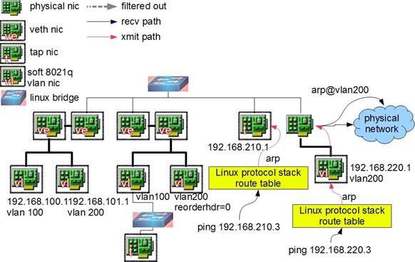

Linux
杂
【Grub2】制作UEFI版本Grub2引导
如何在Linux中查看所有正在运行的进程
如何在Linux中查看所有正在运行的进程
linux ps 命令参数详解
-a 显示所有终端机下执行的进程，除了阶段作业领导者之外。
a 显示现行终端机下的所有进程，包括其他用户的进程。
-A 显示所有进程。
-c 显示CLS和PRI栏位。
c 列出进程时，显示每个进程真正的指令名称，而不包含路径，参数或常驻服务的标示。
-C<指令名称> 指定执行指令的名称，并列出该指令的进程的状况。
-d 显示所有进程，但不包括阶段作业领导者的进程。
-e 此参数的效果和指定"A"参数相同。
e 列出进程时，显示每个进程所使用的环境变量。
-f 显示UID,PPIP,C与STIME栏位。
f 用ASCII字符显示树状结构，表达进程间的相互关系。
-g<群组名称> 此参数的效果和指定"-G"参数相同，当亦能使用阶段作业领导者的名称来指定。
g 显示现行终端机下的所有进程，包括群组领导者的进程。
-G<群组识别码> 列出属于该群组的进程的状况，也可使用群组名称来指定。
h 不显示标题列。
-H 显示树状结构，表示进程间的相互关系。
-j或j 采用工作控制的格式显示进程状况。
-l或l 采用详细的格式来显示进程状况。
L 列出栏位的相关信息。
-m或m 显示所有的执行绪。
n 以数字来表示USER和WCHAN栏位。
-N 显示所有的进程，除了执行ps指令终端机下的进程之外。
-p<进程识别码> 指定进程识别码，并列出该进程的状况。
p<进程识别码> 此参数的效果和指定"-p"参数相同，只在列表格式方面稍有差异。
r 只列出现行终端机正在执行中的进程。
-s<阶段作业> 指定阶段作业的进程识别码，并列出隶属该阶段作业的进程的状况。
s 采用进程信号的格式显示进程状况。
S 列出进程时，包括已中断的子进程资料。
-t<终端机编号> 指定终端机编号，并列出属于该终端机的进程的状况。
t<终端机编号> 此参数的效果和指定"-t"参数相同，只在列表格式方面稍有差异。
-T 显示现行终端机下的所有进程。
-u<用户识别码> 此参数的效果和指定"-U"参数相同。
u 以用户为主的格式来显示进程状况。
-U<用户识别码> 列出属于该用户的进程的状况，也可使用用户名称来指定。
U<用户名称> 列出属于该用户的进程的状况。
v 采用虚拟内存的格式显示进程状况。
-V或V 显示版本信息。
-w或w 采用宽阔的格式来显示进程状况。
x 显示所有进程，不以终端机来区分。
X 采用旧式的Linux i386登陆格式显示进程状况。
-y 配合参数"-l"使用时，不显示F(flag)栏位，并以RSS栏位取代ADDR栏位。
常用组合
ps -ef
ps aux 或 ps -aux
ps auxc 或 ps -auxc
ps axjf 或 ps -axjf
ps axjfc 或 ps -axjfc
Linux下进程占用CPU100%的解决方法
linux 也会遇到进程占用CPU100%.
步骤是:
1)先top,查看进程运行状况,包括进程ID,CPU占用率等.Linux还是比较友好的,他会把CPU使用率最大的放在最上面,很快我就找到了罪魁祸首:ID:20641 ...
2)找到了进程,那再仔细看一下也无妨,然后ps ax,查看进程运行状况.可以查看到进程的ID号,那个用户在使用,进程命令是什么等.
3)情况了解了,原来是vi init在作怪,用kill -9 20641强制干掉此进程.
再TOP一次.好了,CPU使用率恢复正常了.
附命令用法:
1.top
使用权限：所有使用者
使用方式：top [-][d delay][q][c][S][s][n]
说明：即时显示process的动态
参数:
d:改变显示的更新速度，或是在交谈式指令列(interactive command)按s
q:没有任何延迟的显示速度，如果使用者是有superuser的权限，则top将会以最高的优先序执行
c:切换显示模式，共有两种模式，一是只显示执行档的名称，另一种是显示完整的路径与名称S:累积模式，会将己完成或消失的子行程 (dead child process )的CPU time累积起来
s:安全模式，将交谈式指令取消,避免潜在的危机
i:不显示任何闲置(idle)或无用(zombie)的行程
n:更新的次数，完成后将会退出top
b:批次档模式，搭配"n"参数一起使用，可以用来将top的结果输出到档案内
范例：
显示更新十次后退出 ;
top -n 10
使用者将不能利用交谈式指令来对行程下命令 :
top -s
将更新显示二次的结果输入到名称为 top.log 的档案里 :
top -n 2 -b < top.log
2.ps
1）ps a 显示现行终端机下的所有程序，包括其他用户的程序。
2）ps -A 显示所有程序。
3）ps c 列出程序时，显示每个程序真正的指令名称，而不包含路径，参数或常驻服务的标示。
4）ps -e 此参数的效果和指定"A"参数相同。
5）ps e 列出程序时，显示每个程序所使用的环境变量。
6）ps f 用ASCII字符显示树状结构，表达程序间的相互关系。
7）ps -H 显示树状结构，表示程序间的相互关系。
8）ps -N 显示所有的程序，除了执行ps指令终端机下的程序之外。
9）ps s 采用程序信号的格式显示程序状况。
10）ps S 列出程序时，包括已中断的子程序资料。
11）ps -t<终端机编号> 指定终端机编号，并列出属于该终端机的程序的状况。
12）ps u 以用户为主的格式来显示程序状况。
13）ps x 显示所有程序，不以终端机来区分。
最常用的方法是ps -aux,然后再利用一个管道符号导向到grep去查找特定的进程,然后再对特定的进程进行操作。
如何在Linux中查看所有正在运行的进程
你可以使用ps命令。它能显示当前运行中进程的相关信息，包括进程的PID。Linux和UNIX都支持ps命令，显示所有运行中进程的相关信息。ps命令能提供一份当前进程的快照。如果你想状态可以自动刷新，可以使用top命令。
ps命令
输入下面的ps命令，显示所有运行中的进程：
# ps aux | less
其中，
-A：显示所有进程
a：显示终端中包括其它用户的所有进程
x：显示无控制终端的进程
任务：查看系统中的每个进程。
# ps -A
# ps -e
任务：查看非root运行的进程
# ps -U root -u root -N
任务：查看用户vivek运行的进程
# ps -u vivek
任务：top命令
top命令提供了运行中系统的动态实时视图。在命令提示行中输入top：
# top
按q退出，按h进入帮助。
任务：显示进程的树状图。
pstree以树状显示正在运行的进程。树的根节点为pid或init。如果指定了用户名，进程树将以用户所拥有的进程作为根节点。
$ pstree
任务：使用ps列印进程树
# ps -ejH
# ps axjf
任务：获得线程信息
输入下列命令：
# ps -eLf
# ps axms
任务：获得安全信息
输入下列命令：
# ps -eo euser,ruser,suser,fuser,f,comm,label
# ps axZ
# ps -eM
任务：将进程快照储存到文件中
输入下列命令：
# top -b -n1 > /tmp/process.log
你也可以将结果通过邮件发给自己：
# top -b -n1 | mail -s 'Process snapshot' you@example.com
任务：查找进程
使用pgrep命令。pgrep能查找当前正在运行的进程并列出符合条件的进程ID。例如显示firefox的进程ID：
$ pgrep firefox
下面命令将显示进程名为sshd、所有者为root的进程。
$ pgrep -u root sshd
向htop和atop说hello
htop是一个类似top的交互式进程查看工具，但是可以垂直和水平滚动来查看所有进程和他们的命令行。进程的相关操作(killing，renicing)不需要输入PID。要安装htop输入命令：
# apt-get install htop
或
# yum install htop
在命令提示行中输入htop：
# htop
atop工具
atop是一个用来查看Linux系统负载的交互式监控工具。它能展现系统层级的关键硬件资源(从性能角度)的使用情况，如CPU、内存、硬盘和网络。
它也可以根据进程层级的CPU和内存负载显示哪个进程造成了特定的负载;如果已经安装内核补丁可以显示每个进程的硬盘和网络负载。输入下面的命令启动atop：
# atop
parted命令分区--(GPT分区)
MBR分区表(主引导记录分区表):2.1TB(1TB=1024GB).
①最多支持4个主分区.
②扩展分区只能有一个,并且扩展分区与主分区之和不超过4,扩展分区内不能写数据,只 能写入逻辑分区.
③逻辑分区可以有10个.
GPT分区表(也叫GUID分区表,全局唯一标示分区表):9.4ZB(GB-TB-EB-PB-ZB 1024进制),最多支持128个分区.其中1个作为系统保留分区,剩余127个为用户自定义分区.
parted命令直接建立的分区是ext2格式,并且,如果通过mkfs格式化为ext4,parted进行resize动态调整分区大小会失败.parted命令能够识别MBR分区表,显示为msdos.
[root@localhost ~]# parted #进入parted命令
GNU Parted 2.1
使用 /dev/sda #一定要看清楚,这是主磁盘,不能在这里做分区和格式 化,不然系统将会无法开机
Welcome to GNU Parted! Type 'help' to view a list of commands.
(parted) quit #这是输入命令的位置,立马使用quit退出
[root@localhost ~]# parted /dev/sdb #使用parted命令必须加入参数
GNU Parted 2.1
使用 /dev/sdb
Welcome to GNU Parted! Type 'help' to view a list of commands.
(parted)
接下来进行如下几个实验:
①建立GPT分区
②已经建立分区进行扩容
③mount挂载
④自动加载GPT分区
1.建立GPT分区:
[root@localhost ~]# parted
GNU Parted 2.1
使用 /dev/sda
Welcome to GNU Parted! Type 'help' to view a list of commands.
(parted) help
接下来会显示一堆的命令列表和命令内容概括,主要有一下几个需要知道:
①help #显示命令帮助文档,特别是命令的输入格式
②mklabel mktable #2个都是建立新的分区表(硬盘标签),感觉还是mktable更加习惯,好记
③mkfs #为分区写入文件系统
④mkpart #创建新的分区
⑤print #打印分区信息(已经创建的分区使用这个命令查看)
⑥quit #退出parted命令
⑦rm #删除分区
⑧select #选择分区设备,可以切换磁盘
(parted) mktable #新建分区表
新的磁盘标签类型？ gpt #GPT分区表
警告: The existing disk label on /dev/sdb will be destroyed and all data on this disk will be lost. Do you want to continue? #提示"新建分区表会摧毁所有存在磁盘中的数据",是否继续?
是/Yes/否/No? y #当然是啦
(parted) print #显示结果
Model: VMware, VMware Virtual S (scsi)
Disk /dev/sdb: 5369MB
Sector size (logical/physical): 512B/512B
Partition Table: gpt #是不是发现这里由msdos(表示MBR)变成了GPT
(parted) mkpart #新建分区
分区名称？ []? nigulasi1 #自己命名,比如说 尼古拉斯 哈哈
文件系统类型？ [ext2]? #只能默认ext2
起始点？ 1 #起始点 1M
结束点？ 1G #结束点1G,注意下一个分区起始点不能小于1000M,也就是说要 从1001M开始,不然会报错,告诉你已经分区了
(parted) print #显示结果
Model: VMware, VMware Virtual S (scsi)
Disk /dev/sdb: 5369MB
Sector size (logical/physical): 512B/512B
Partition Table: gpt
Number Start End Size File system Name 标志
1 1049kB 1000MB 999MB ext2 nigulasi1
2.已经建立的分区进行动态调整大小
新建一个2G的分区
(parted) resize 2 #重新设置分区大小
WARNING: you are attempting to use parted to operate on (resize) a file system.
parted's file system manipulation code is not as robust as what you'll find in
dedicated, file-system-specific packages like e2fsprogs. We recommend
you use parted only to manipulate partition tables, whenever possible.
Support for performing most operations on most types of file systems
will be removed in an upcoming release.
起始点？ [1001MB]? #起始点默认回车
结束点？ [3000MB]? 2000M #结束点从3G改为2G(当前默认1G=1000M,方便计算)
警告: A resize operation on this file system will use EXPERIMENTAL code
that MAY CORRUPT it (although no one has reported any such damage yet).
You should at least backup your data first, and run 'e2fsck -f' afterwards.
确认/OK/放弃/Cancel? ok #输入ok
(parted) print #显示结果已经缩减大小
Model: VMware, VMware Virtual S (scsi)
Disk /dev/sdb: 5369MB
Sector size (logical/physical): 512B/512B
Partition Table: gpt
Number Start End Size File system Name 标志
1 1049kB 900MB 899MB ext2 nigulasi1
2 1001MB 2000MB 999MB ext2 nigulasi2
(parted) quit #退出
其实resize按理来说可以变小,也可以变大,但是实际上扩容会报错,操作了十几遍只有一遍成功,确实很奇葩,这个parted工具还是不够完善,比如:操作resize后显示Warning:
parted's file system manipulation code is not as robust as what you'll find in dedicated, file-system-specific packages like e2fsprogs.
表示parted工具没有我们想的那么完善......毕竟我们马上要学习LVM逻辑卷组,以后只能用更高级的LVM,这些就当是回忆科技的过往吧.
3.手动挂载
[root@localhost ~]# mkdir /mnt/sdb1 #设置挂载点(挂载点就是已经建立的空目录)
[root@localhost ~]# mkdir /mnt/sdb2 #设置挂载点,新建了2个分区,需要2个挂载点
[root@localhost ~]# mount /dev/sdb1 /mnt/sdb1/ #把第二块SCSI硬盘上的第一个分区挂载 到/mnt/sdb1目录上
[root@localhost ~]# mount /dev/sdb2 /mnt/sdb2/ #把第二块SCSI硬盘上的第二个分区挂载 到/mnt/sdb2目录上
[root@localhost ~]# df -h #显示(只能看已经挂载的)磁盘信息,相当于双击打 开"我的电脑"后的显示效果
Filesystem Size Used Avail Use% Mounted on
/dev/sda5 9.8G 2.4G 7.0G 26% /
tmpfs 495M 0 495M 0% /dev/shm
/dev/sda1 190M 33M 147M 19% /boot
/dev/sda3 1.9G 3.5M 1.8G 1% /home
/dev/sdb1 804M 13K 761M 1% /mnt/sdb1
/dev/sdb2 893M 13K 845M 1% /mnt/sdb2
接下来可以cd /mnt/sdb1/进入该分区,挂载点相当于一个进入磁盘对应分区的对应"门",不同分区不同门,进入这个目录(也就是挂载点),也就是进入了分区,新建文件,目录,包括增删改查都是在第二块SCSI硬盘的第一个分区上进行操作!
命令行输入的mount命令是临时生效的,重启后将会失效,因此我们要实现永久生效,那就是把"配置信息"或者命令写入对应文档,那么来看下一小节.
4.自动挂载(/etc/fstab)
Linux开机时查看/etc/fstab这个配置文件,按照配置信息进行自动挂载.
我们需要把新建分区的信息按照对应的格式填入这个文件内,即可达到自动挂载效果.
vi /dec/fstab #进入配置文档
#我们拿出一行来进行学习
UUID=b9008873-894b-4586-bbd9-0690a052c5d6 /home ext4 defaults 1 2
#第一列UUID,相当于硬盘分区的"身份证号码",通过这个号码识别硬盘,命令行模式下输入"ll /dev/disk/by-uuid/"查看对应分区的UUID号码.
#第二列 挂载点
#第三列 文件系统 的格式
#第四列 默认参数配置,defaults就行,如果有其他功能添加,添加",功能名"即可
#第五列 是否备份,1-备份,0-不备份,默认1即可
#第六列 是开机fsck工具自检,0-不检,1-开机时检测,2-开机后检测,只有根分区默认开机自检, 其他分区默认2,有点像360优化开机选项,不然的话拖慢了开机速度.
备注:
这里存在一个很大的问题,导致很多人挂载失败!
首先mount命令默认挂载的时候不需要我们手动配置信息,但是配置文件时需要UUID,这个数据是格式化后生成的,如果只是分区,但是没有格式化,一种可能是命令/"ll /dev/disk/by-uuid/"结果里没有你的设备对应的UUID,比如说/dev/sdb2,还有一种可能是显示的旧UUID,为什么说旧呢?因为你从最近一次文件修改时间可以看出来.
因此你粘贴的UUID绝对是错的,重启后系统开机报错,说找不到UUID对应设备,谨记!
如果开机报错,修复办法在上一篇文档"fdisk创建MBR分区"的末尾.
在文档末尾添加如下内容:
UUID=95988f1e-de1f-47e6-a791-4184a588d7ed /mnt/sdb1 ext2 defaults 1 2
UUID=31f7fdbc-780b-42fd-9d3e-6764edbe68e3 /mnt/sdb2 ext2 defaults 1 2
保存,退出文档.
重启.
[root@localhost ~]# df -h
Filesystem Size Used Avail Use% Mounted on
/dev/sda5 9.8G 2.4G 7.0G 26% /
tmpfs 495M 0 495M 0% /dev/shm
/dev/sda1 190M 33M 147M 19% /boot
/dev/sda3 1.9G 3.5M 1.8G 1% /home
/dev/sdb1 804M 13K 761M 1% /mnt/sdb1
/dev/sdb2 893M 13K 845M 1% /mnt/sdb2
可以看到分区已经自动挂载上来了,哇偶.
八.建立swap分区
实验:
①建立swap分区
②挂载至系统swap中
③自动挂载swap分区
在虚拟机里新添加一个空白盘给系统,1G大小足够了,只是做实验加入到swap分区中.
记得添加空白盘后用命令"fdisk -l"如果不显示/dev/sdc,重启.
[root@localhost ~]# fdisk -l
Disk /dev/sda: 21.5 GB, 21474836480 bytes #当前测试Disk /dev/sdc,因此省略显示a/b盘
Disk /dev/sdb: 5368 MB, 5368709120 bytes
Disk /dev/sdc: 1073 MB, 1073741824 bytes #已经识别第三块SCSI硬盘了
255 heads, 63 sectors/track, 130 cylinders
Units = cylinders of 16065 * 512 = 8225280 bytes
Sector size (logical/physical): 512 bytes / 512 bytes
I/O size (minimum/optimal): 512 bytes / 512 bytes
Disk identifier: 0x00000000
1.使用fdisk工具创建swape分区:
[root@localhost ~]# fdisk /dev/sdc #配置第三块硬盘,要写命令参数的
Device contains neither a valid DOS partition table, nor Sun, SGI or OSF disklabel
Building a new DOS disklabel with disk identifier 0x1becc0ab.
Changes will remain in memory only, until you decide to write them.
After that, of course, the previous content won't be recoverable.
#上面一大堆的警告意思就是:<你添加的空白盘是个三不像,啥格式都没有,我给你建了个DOS分区表格式,如果你保存,那就这个样写入了,写入后你的数据就没了>空白盘,不用管.
Warning: invalid flag 0x0000 of partition table 4 will be corrected by w(rite)
WARNING: DOS-compatible mode is deprecated. It's strongly recommended to
switch off the mode (command 'c') and change display units to
sectors (command 'u').
Command (m for help): p #显示分区信息,空白盘呗,要啥没啥.
Disk /dev/sdc: 1073 MB, 1073741824 bytes
255 heads, 63 sectors/track, 130 cylinders
Units = cylinders of 16065 * 512 = 8225280 bytes
Sector size (logical/physical): 512 bytes / 512 bytes
I/O size (minimum/optimal): 512 bytes / 512 bytes
Disk identifier: 0x1becc0ab
Device Boot Start End Blocks Id System
Command (m for help): t #直接改系统格式会报错,因为没有任何分区啊
No partition is defined yet!
Command (m for help): n #新建分区
Command action
e extended
p primary partition (1-4)
p #输入p,选择主分区
Partition number (1-4): 1 #分区号码,挨着顺序来
First cylinder (1-130, default 1): #第一个柱面,默认就是1,直接回车就行
Using default value 1
Last cylinder, +cylinders or +size{K,M,G} (1-130, default 130): #最后一个柱面,默认回车
Using default value 130
Command (m for help): p #显示分区信息
Disk /dev/sdc: 1073 MB, 1073741824 bytes
255 heads, 63 sectors/track, 130 cylinders
Units = cylinders of 16065 * 512 = 8225280 bytes
Sector size (logical/physical): 512 bytes / 512 bytes
I/O size (minimum/optimal): 512 bytes / 512 bytes
Disk identifier: 0x1becc0ab
Device Boot Start End Blocks Id System
/dev/sdc1 1 130 1044193+ 83 Linux
#最后一列System(系统)的内容是Linux,不行,我们要建swap分区,所以得改!
Command (m for help): l #列举支持的系统格式(主要记swap是哪个号,恩,82)
0 Empty 24 NEC DOS 81 Minix / old Lin bf Solaris
1 FAT12 39 Plan 9 82 Linux swap / So c1 DRDOS/sec (FAT-
2 XENIX root 3c PartitionMagic 83 Linux c4 DRDOS/sec (FAT-
3 XENIX usr 40 Venix 80286 84 OS/2 hidden C: c6 DRDOS/sec (FAT-
4 FAT16 <32M 41 PPC PReP Boot 85 Linux extended c7 Syrinx
5 Extended 42 SFS 86 NTFS volume set da Non-FS data
6 FAT16 4d QNX4.x 87 NTFS volume set db CP/M / CTOS / .
7 HPFS/NTFS 4e QNX4.x 2nd part 88 Linux plaintext de Dell Utility
8 AIX 4f QNX4.x 3rd part 8e Linux LVM df BootIt
9 AIX bootable 50 OnTrack DM 93 Amoeba e1 DOS access
a OS/2 Boot Manag 51 OnTrack DM6 Aux 94 Amoeba BBT e3 DOS R/O
b W95 FAT32 52 CP/M 9f BSD/OS e4 SpeedStor
c W95 FAT32 (LBA) 53 OnTrack DM6 Aux a0 IBM Thinkpad hi eb BeOS fs
e W95 FAT16 (LBA) 54 OnTrackDM6 a5 FreeBSD ee GPT
f W95 Ext'd (LBA) 55 EZ-Drive a6 OpenBSD ef EFI (FAT-12/16/
10 OPUS 56 Golden Bow a7 NeXTSTEP f0 Linux/PA-RISC b
11 Hidden FAT12 5c Priam Edisk a8 Darwin UFS f1 SpeedStor
12 Compaq diagnost 61 SpeedStor a9 NetBSD f4 SpeedStor
14 Hidden FAT16 <3 63 GNU HURD or Sys ab Darwin boot f2 DOS secondary
16 Hidden FAT16 64 Novell Netware af HFS / HFS+ fb VMware VMFS
17 Hidden HPFS/NTF 65 Novell Netware b7 BSDI fs fc VMware VMKCORE
18 AST SmartSleep 70 DiskSecure Mult b8 BSDI swap fd Linux raid auto
1b Hidden W95 FAT3 75 PC/IX bb Boot Wizard hid fe LANstep
1c Hidden W95 FAT3 80 Old Minix be Solaris boot ff BBT
1e Hidden W95 FAT1
Command (m for help): t #这回有分区了,再次修改系统格式
Selected partition 1 #只有一个分区,所以没得选,只能是1
Hex code (type L to list codes): 82 #这里输入82,意思就是改为swap格式
Changed system type of partition 1 to 82 (Linux swap / Solaris)
Command (m for help): p #显示结果
Disk /dev/sdc: 1073 MB, 1073741824 bytes
255 heads, 63 sectors/track, 130 cylinders
Units = cylinders of 16065 * 512 = 8225280 bytes
Sector size (logical/physical): 512 bytes / 512 bytes
I/O size (minimum/optimal): 512 bytes / 512 bytes
Disk identifier: 0x1becc0ab
Device Boot Start End Blocks Id System
/dev/sdc1 1 130 1044193+ 82 Linux swap / Solaris
#这里显示的效果就是我们要的swap分区了,仔细核对最后一列系统格式,别搞错了.
#一定一定一定要保存,重要的事情说三遍,输入 w
Command (m for help): w #!!!!重要
The partition table has been altered! #意思就是磁盘的分区表已经改了
Calling ioctl() to re-read partition table. #调用ioctl()函数可以得到磁盘信息,除非你做 开发,不然用不到
Syncing disks. #信息已经同步到了磁盘
挂载至swap分区中:
分区后,该做什么? 格式化啊啊啊啊 !
[root@localhost ~]# mkswap /dev/sdc1 #用mkswap格式化/dev/sdc1分区
Setting up swapspace version 1, size = 1044188 KiB
no label, UUID=0ccb15e6-af00-475c-93b6-56cd1f543ccb #说好的格式化后生成UUID,信!
[root@localhost ~]# free -h #记录当前swap分区信息,不然你咋知道增大了没有?
total used free shared buffers cached
Mem: 988M 279M 709M 260K 19M 108M
-/+ buffers/cache: 150M 837M
Swap: 7.8G 0B 7.8G
[root@localhost ~]# swapon /dev/sdc1 #手工把/dev/sdc1加入swap分区,没报错
[root@localhost ~]# free -h #对照下,恩,确实变大了1G,成功!
total used free shared buffers cached
Mem: 988M 279M 708M 260K 19M 108M
-/+ buffers/cache: 151M 836M
Swap: 8.8G 0B 8.8G
自动挂载swap
vi /etc/fstab
文档末尾加入下面一行信息:
UUID=0ccb15e6-af00-475c-93b6-56cd1f543ccb swap swap defaults 0 0
保存退出.
重启.
开机后检查是否正常:
Last login: Fri Apr 13 17:12:05 2018 from 192.168.41.1
[root@localhost ~]# free -h
total used free shared buffers cached
Mem: 988M 231M 757M 260K 18M 58M
-/+ buffers/cache: 153M 834M
Swap: 8.8G 0B 8.8G
内存大小直接存7.8G变成了8.8G,不用再手动添加了,哈哈,省事.
Linux分区工具Fdisk与Parted以及GParted
如何在 Linux 中使用 parted 对磁盘分区
在 Linux 中创建和删除分区是一种常见的操作，因为存储设备（如硬盘驱动器和 USB 驱动器）在使用之前必须以某种方式进行结构化。在大多数情况下，大型存储设备被分为称为 分区(partition)的独立部分。分区操作允许您将硬盘分割成独立的部分，每个部分都像是一个硬盘驱动器一样。如果您运行多个操作系统，那么分区是非常有用的。
在 Linux 中有许多强大的工具可以创建、删除和操作磁盘分区。在本文中，我将解释如何使用 parted 命令，这对于大型磁盘设备和许多磁盘分区尤其有用。parted 与更常见的 fdisk 和 cfdisk 命令之间的区别包括:
GPT 格式：parted 命令可以创建全局惟一的标识符分区表 GPT，而 fdisk 和 cfdisk 则仅限于 DOS 分区表
。
更大的磁盘： DOS 分区表可以格式化最多 2TB 的磁盘空间，尽管在某些情况下最多可以达到 16TB。然而，一个 GPT 分区表可以处理最多 8ZiB 的空间。
更多的分区： 使用主分区和扩展分区，DOS 分区表只允许 16 个分区。在 GPT 中，默认情况下您可以得到 128 个分区，并且可以选择更多的分区。
可靠性： 在 DOS 分区表中，只保存了一份分区表备份，在 GPT 中保留了两份分区表的备份（在磁盘的起始和结束部分），同时 GPT 还使用了 CRC 校验和来检查分区表的完整性，在 DOS 分区中并没有实现。
由于现在的磁盘更大，需要更灵活地使用它们，建议使用 parted 来处理磁盘分区。大多数时候，磁盘分区表是作为操作系统安装过程的一部分创建的。在向现有系统添加存储设备时，直接使用 parted 命令非常有用。
尝试一下 parted
下面解释了使用 parted 命令对存储设备进行分区的过程。为了尝试这些步骤，我强烈建议使用一块全新的存储设备或一种您不介意将其内容删除的设备。
1、列出分区
使用 parted -l 来标识你要进行分区的设备。一般来说，第一个硬盘 （/dev/sda 或 /dev/vda ）保存着操作系统， 因此要寻找另一个磁盘，以找到你想要分区的磁盘 (例如，/dev/sdb、/dev/sdc、 /dev/vdb、/dev/vdc 等)。
$ sudo parted -l
[sudo] password for daniel:
Model: ATA RevuAhn_850X1TU5 (scsi)
Disk /dev/vdc: 512GB
Sector size (logical/physical): 512B/512B
Partition Table: msdos
Disk Flags:
Number Start End Size Type File system Flags
1 1049kB 525MB 524MB primary ext4 boot
2 525MB 512GB 512GB primary lvm
2、打开存储设备
使用 parted 选中您要分区的设备。在这里例子中，是虚拟系统上的第三个磁盘（/dev/vdc）。指明你要使用哪一个设备非常重要。 如果你仅仅输入了 parted 命令而没有指定设备名字， 它会随机选择一个设备进行操作。
$ sudo parted /dev/vdc
GNU Parted 3.2
Using /dev/vdc
Welcome to GNU Parted! Type 'help' to view a list of commands.
(parted)
3、 设定分区表
设置分区表为 GPT ，然后输入 Yes 开始执行。
(parted) mklabel
gpt
Warning: the existing disk label on /dev/vdc will be destroyed
and all data on this disk will be lost. Do you want to continue?
Yes/No? Yes
mklabel 和 mktable 命令用于相同的目的（在存储设备上创建分区表）。支持的分区表有：aix、amiga、bsd、dvh、gpt、mac、ms-dos、pc98、sun 和 loop。记住 mklabel 不会创建一个分区，而是创建一个分区表。
4、 检查分区表
查看存储设备信息:
(parted) print
Model: Virtio Block Device (virtblk)
Disk /dev/vdc: 1396MB
Sector size (logical/physical): 512B/512B
Partition Table: gpt
Disk Flags:
Number Start End Size File system Name Flags
5、 获取帮助
为了知道如何去创建一个新分区，输入： (parted) help mkpart
。
(parted) help mkpart
mkpart PART-TYPE [FS-TYPE] START END make a partition
PART-TYPE is one of: primary, logical, extended
FS-TYPE is one of: btrfs, nilfs2, ext4, ext3, ext2, fat32, fat16, hfsx, hfs+, hfs, jfs, swsusp,
linux-swap(v1), linux-swap(v0), ntfs, reiserfs, hp-ufs, sun-ufs, xfs, apfs2, apfs1, asfs, amufs5,
amufs4, amufs3, amufs2, amufs1, amufs0, amufs, affs7, affs6, affs5, affs4, affs3, affs2, affs1,
affs0, linux-swap, linux-swap(new), linux-swap(old)
START and END are disk locations, such as 4GB or 10%. Negative values count from the end of the
disk. For example, -1s specifies exactly the last sector.
'mkpart' makes a partition without creating a new file system on the partition. FS-TYPE may be
specified to set an appropriate partition ID.
6、 创建分区
为了创建一个新分区（在这个例子中，分区 0 有 1396MB），输入下面的命令：
(parted) mkpart primary 0 1396MB
Warning: The resulting partition is not properly aligned for best performance
Ignore/Cancel? I
(parted) print
Model: Virtio Block Device (virtblk)
Disk /dev/vdc: 1396MB
Sector size (logical/physical): 512B/512B
Partition Table: gpt
Disk Flags:
Number Start End Size File system Name Flags
1 17.4kB 1396MB 1396MB primary
文件系统类型（fstype）并不是在 /dev/vdc1上创建 ext4 文件系统。 DOS 分区表的分区类型是 主分区(primary)、 逻辑分区(logical)和 扩展分区(extended)。 在 GPT 分区表中，分区类型用作分区名称。 在 GPT 下必须提供分区名称；在上例中，primary 是分区名称，而不是分区类型。
7、 保存退出
当你退出 parted 时，修改会自动保存。退出请输入如下命令：
(parted) quit
Information: You may need to update /etc/fstab
谨记
当您添加新的存储设备时，请确保在开始更改其分区表之前确定正确的磁盘。如果您错误地更改了包含计算机操作系统的磁盘分区，会使您的系统无法启动。
Linux里设置环境变量的方法（export PATH）
1.动态库路径的设置
Linux下调用动态库和windows不一样.linux 可执行程序是靠配置文件去读取路径的,因此有些时候需要设置路径
具体操作如下
export LD_LIBRARY_PATH=/home/.....(动态库的目录)
不过这种设置方法只是在当前的session中有效
你可以修改配置文件实现任何session都有效
2.环境变量的设置
一般来说，配置交叉编译工具链的时候需要指定编译工具的路径，此时就需要设置环境变量。例如我的mips-linux-gcc编译器在“/opt /au1200_rm/build_tools/bin”目录下，build_tools就是我的编译工具，则有如下三种方法来设置环境变量：
2.1、直接用export命令：
#export PATH=$PATH:/opt/au1200_rm/build_tools/bin
查看是否已经设好，可用命令export查看：
可以看到，环境变量已经设好，PATH里面已经有了我要加的编译器的路径。
2.2、修改profile文件：
#vi /etc/profile
在里面加入:
export PATH="$PATH:/opt/au1200_rm/build_tools/bin"
让环境变量立即生效需要执行如下命令：
#source /etc/profile
2.3. 修改.bashrc文件：
# vi /root/.bashrc
在里面加入：
export PATH="$PATH:/opt/au1200_rm/build_tools/bin"
后两种方法一般需要重新注销系统才能生效，最后可以通过echo命令测试一下：
# echo $PATH
看看输出里面是不是已经有了/my_new_path这个路径了。
-----------------------------------------------------------------------------------
“/bin”、“/sbin”、“/usr/bin”、“/usr/sbin”、“/usr/local/bin”等路径已经在系统环境变量中了，如果可执行文件在这几个标准位置，在终端命令行输入该软件可执行文件的文件名和参数(如果需要参数)，回车即可。
如果不在标准位置，文件名前面需要加上完整的路径。不过每次都这样跑就太麻烦了，一个“一劳永逸”的办法是把这个路径加入环境变量。命令 “PATH=$PATH:路径”可以把这个路径加入环境变量，但是退出这个命令行就失效了。要想永久生效，需要把这行添加到环境变量文件里。有两个文件可选：“/etc/profile”和用户主目录下的“.bash_profile”，“/etc/profile”对系统里所有用户都有效，用户主目录下的“.bash_profile”只对这个用户有效。
“PATH=PATH:路径1:路径2:...:路径n”，意思是可执行文件的路径包括原先设定的路径，也包括从“路径1”到“路径n”的所有路径。当用户输入一个一串字符并按回车后，shell会依次在这些路径里找对应的可执行文件并交给系统核心执行。那个“
PATH”表示原先设定的路径仍然有效，注意不要漏掉。某些软件可能还有“PATH”以外类型的环境变量需要添加，但方法与此相同，并且也需要注意“$”。
注意，与DOS/Window不同，UNIX类系统环境变量中路径名用冒号分隔，不是分号。另外，软件越装越多，环境变量越添越多，为了避免造成混乱，建议所有语句都添加在文件结尾，按软件的安装顺序添加。
格式如下()：
# 软件名-版本号
PATH=$PATH:路径1:路径2:...:路径n
其他环境变量=$其他环境变量:...
在“profile”和“.bash_profile”中，“#”是注释符号，写在这里除了视觉分隔外没有任何效果。
设置完毕，注销并重新登录，设置就生效了。如果不注销，直接在shell里执行这些语句，也能生效，但是作用范围只限于执行了这些语句的shell。
相关的环境变量生效后，就不必老跑到软件的可执行文件目录里去操作了。
from: http://blog.csdn.net/kpgood/archive/2009/03/07/3965446.aspx
使用linux的朋友越来越多了，在linux下做开发首先就是需要配置环境变量，下面以配置Java环境变量为例介绍三种配置环境变量的方法。
1.修改/etc/profile文件
如果你的计算机仅仅作为开发使用时推荐使用这种方法，因为所有用户的shell都有权使用这些环境变量，可能会给系统带来安全性问题。
(1)用文本编辑器打开/etc/profile
(2)在profile文件末尾加入：
JAVA_HOME=/usr/share/jdk1.5.0_05
PATH=JAVAHOME/bin:
PATH
CLASSPATH=.:JAVAHOME/lib/dt.jar:
JAVA_HOME/lib/tools.jar
export JAVA_HOME
export PATH
export CLASSPATH
(3)重新登录
注解：
a. 你要将 /usr/share/jdk1.5.0_05jdk 改为你的jdk安装目录
b. linux下用冒号“:”来分隔路径
c. PATH/
CLASSPATH / $JAVA_HOME 是用来引用原来的环境变量的值,在设置环境变量时特别要注意不能把原来的值给覆盖掉了，这是一种常见的错误。
d. CLASSPATH中当前目录“.”不能丢,把当前目录丢掉也是常见的错误。
e. export是把这三个变量导出为全局变量。
f. 大小写必须严格区分。
2. 修改.bashrc文件
这种方法更为安全，它可以把使用这些环境变量的权限控制到用户级别，如果你需要给某个用户权限使用这些环境变量，你只需要修改其个人用户主目录下的.bashrc文件就可以了。
(1)用文本编辑器打开用户目录下的.bashrc文件
(2)在.bashrc文件末尾加入：
set JAVA_HOME=/usr/share/jdk1.5.0_05
export JAVA_HOME
set PATH=JAVAHOME/bin:
PATH
export PATH
set CLASSPATH=.:JAVAHOME/lib/dt.jar:
JAVA_HOME/lib/tools.jar
export CLASSPATH
(3)重新登录
3. 直接在shell下设置变量
不赞成使用这种方法，因为换个shell，你的设置就无效了，因此这种方法仅仅是临时使用，以后要使用的时候又要重新设置，比较麻烦。
只需在shell终端执行下列命令：
export JAVA_HOME=/usr/share/jdk1.5.0_05
export PATH=JAVAHOME/bin:
PATH
export CLASSPATH=.:JAVAHOME/lib/dt.jar:
JAVA_HOME/lib/tools.jar
在 linux系统 下，如果你下载并安装了应用程序，很有可能在键入它的名称时出现“ command not found ”的提示内容。如果每次都到安装目标文件夹内，找到可执行文件来进行操作就太繁琐了。这涉及到环境变量 PATH 的设置问题，而 PATH 的设置也是在 linux 下定制环境变量的一个组成部分。本文基于 RedHat 9.0 ，详细讲解了环境变量定制的问题。
2、变量简介
Linux 是一个多用户的操作系统。每个用户登录系统后，都会有一个专用的运行环境。通常每个用户默认的环境都是相同的，这个默认环境实际上就是一组环境变量的定义。用户可以对自己的运行环境进行定制，其方法就是修改相应的系统环境变量。
3、常见的环境变量
$PATH：决定了shell将到哪些目录中寻找命令或程序
$HOME：当前用户主目录
$MAIL：是指当前用户的邮件存放目录。
$SHELL：是指当前用户用的是哪种Shell。
$HISTSIZE：是指保存历史命令记录的条数
$LOGNAME：是指当前用户的登录名。
$HOSTNAME：是指主机的名称，许多应用程序如果要用到主机名的话，通常是从这个环境变量中来取得的。
$LANG/LANGUGE：是和语言相关的环境变量，使用多种语言的用户可以修改此环境变量。
PS1：是基本提示符，对于root用户是#，对于普通用户是
，也可以使用一些更复杂的值。
$PS2：是附属提示符，默认是“>”。可以通过修改此环境变量来修改当前的命令符，比如下列命令会将提示符修改成字符串“Hello,My NewPrompt :) ”。
# PS1=" Hello,My NewPrompt :) "
$IFS：输入域分隔符。当shell读取输入时，用来分隔单词的一组字符，它们通常是空格、制表符和换行符。
$0：shell脚本的名字。
例如，在我的Linux系统中：
echo
0
/bin/bash
$#：传递给脚本的参数个数。
：shell脚本的进程号，脚本程序通常会用它生成一个唯一的临时文件，如/tmp/tmfile_
例如，在我的Linux系统中：
echo
$
31038 #表示当前shell进程号为31038
4、export命令
export命令将作为他参数的变量导入到子shell中，并使之在子shell中有效。export命令把自己的参数创建为一个环境变量，而这个环境变量可以被其他脚本和当前程序调用的程序看见。
4.1 实验 导出变量
（1）我们先列出脚本程序export2
#！/bin/sh
echo "$foo"
echo "$bar"
（2）然后是脚本export1。在这个脚本的结尾，我们调用export2：
#!/bin/sh
foo="The first meta-syntactic variable"
export bar="The second meta-syntactic variable"
export2
运行这个脚本,将得到如下的输出：
$ export1
#这是个空格，是因为变量foo在export2中不可用，所以$foo被复制为空
The second meta-syntactic variable
$
4.2 设置一个新的环境变量WELCOME
exportWELCOME="Hello!"
echo $WELCOME
Hello!
5、定制环境变量
环境变量是和 Shell 紧密相关的，用户登录系统后就启动了一个 Shell 。对于 Linux 来说一般是 bash ，但也可以重新设定或切换到其它的 Shell 。根据发行版本的情况， bash 有两个基本的系统级配置文件： /etc/bashrc 和 /etc/profile 。这些配置文件包含两组不同的变量： shell 变量和环境变量。前者只是在特定的 shell 中固定（如 bash ），后者在不同 shell 中固定。很明显， shell 变量是局部的，而环境变量是全局的。环境变量是通过 Shell 命令来设置的，设置好的环境变量又可以被所有当前用户所运行的程序所使用。对于 bash 这个 Shell 程序来说，可以通过变量名来访问相应的环境变量，通过 export 来设置环境变量。下面通过几个实例来说明。
5.1 使用命令echo 显示环境变量
#本例使用echo显示常见的变量HOME
echo
HOME
/home/lqm
5.2 设置一个新的环境变量
$ export HELLO=“Hello!”
echo
HELLO
Hello!
5.3 使用 env 命令显示所有的环境变量
$ env
SSH_AGENT_PID=1875
HOSTNAME=lqm
SHELL=/bin/bash
TERM=xterm
HISTSIZE=1000
……
5.4 使用set 命令显示所有本地定义的Shell 变量
$ set
BASH=/bin/bash
……
5.5 使用 unset 命令来清除环境变量
$ export TEST=“test” # 增加一个环境变量 TEST
$ env | grep TEST # 此命令有输出，证明环境变量 TEST 已经存在了
TEST=test
unset
TEST #删除环境变量TEST
$ env | grep TEST # 此命令无输出，证明环境变量 TEST 已经存在了
5.6 使用 readonly 命令设置只读变量
如果使用了 readonly 命令的话，变量就不可以被修改或清除了。示例如下：
$ export TEST="Test" # 增加一个环境变量 TEST
$ readonly TEST #将环境变量TEST设为只读
$ unset TEST #会发现此变量不能被删除
-bash: unset: TEST: cannot unset: readonly variable
$ TEST="New" #会发现此变量不能被修改
-bash: TEST: readonly variable
5.7 用C 程序来访问和设置环境变量
对于 C 程序的用户来说，可以使用下列三个函数来设置或访问一个环境变量。
getenv() 访问一个环境变量。输入参数是需要访问的变量名字，返回值是一个字符串。如果所访问的环境变量不存在，则会返回 NULL 。
setenv() 在程序里面设置某个环境变量的函数。
unsetenv() 清除某个特定的环境变量的函数。
另外，还有一个指针变量 environ ，它指向的是包含所有的环境变量的一个列表。下面的程序可以打印出当前运行环境里面的所有环境变量：
#include <stdio.h>
extern char**environ;
int main ()
{
char**var;
for (var =environ;*var !=NULL;++var)
printf ("%s \n ",*var);
return 0;
}
5.8 通过修改环境变量定义文件来修改环境变量。
需要注意的是，一般情况下，这仅仅对于普通用户适用，避免修改根用户的环境定义文件，因为那样可能会造成潜在的危险。
$vi /etc/bashrc #修改shell变量
$vi /etc/profile #修改环境变量定义文件
然后编辑你的 PATH 声明，其格式为：
PATH=$PATH:<PATH 1>:<PATH 2>:<PATH 3>:------:<PATH N>
你可以自己加上指定的路径，中间用冒号隔开。环境变量更改后，在用户下次登陆时生效，如果想立刻生效，则可执行下面的语句：$ source .bash_profile
需要注意的是，最好不要把当前路径 “./” 放到 PATH 里，这样可能会受到意想不到的攻击。完成后，可以通过 echo
PATH 查看当前的搜索路径。这样定制后，就可以避免频繁的启动位于 shell 搜索的路径之外的程序了。
用wget做站点镜像
# wget -r -p -np -k
-r 表示递归下载,会下载所有的链接,不过要注意的是,不要单独使用这个参数,因为如果你要下载的网站也有别的网站的链接,wget也会把别的网站的东西下载下来,所以要加上-np这个参数,表示不下载别的站点的链接.
-np 表示不下载别的站点的链接.
-k 表示将下载的网页里的链接修改为本地链接.
-p 获得所有显示网页所需的元素,比如图片什么的.
-E 或 --html-extension 将保存的URL的文件后缀名设定为“.html”
+++++++++++++++++++++++++++++++++++++++
# wget -c -t 0 -O rhel6_x86_64.iso
-c 断点续传
-t 0 反复尝试的次数，0为不限次数
-O rhel6_x86_64.iso 把下载的文件命名为rhel6_x86_64.iso
要下载的文件的网址
+++++++++++++++++++++++++++++++++++++++
wget高级用法
http://blog168.chinaunix.net/space.php?uid=26050273&do=blog&id=1742503
摘要：本文讲述了wget的一些高级用法，比如另存为，后台下载，断点下载。批量下载。
增加下载尝试次数和测试下载链接是否生效。
记录下载日志，下载和排除指定类型文 件。
1、下载单个文件
wget url+filename
下载过程中同时可以看到四项信息
已经下载的比例
已经下载的大小
当前下载的速度
剩余的时间
2、使用一个大写O做参数表示另存为
wget -O save_name url
这种方法适用于对应链接中没有显式文件名的情况。
例如： wget -O xx.zip php?src_id=7701
再用不带-O参数的下载一次。
ls -al
总计 132
drwxr-xr-x 2 root root 4096 07-12 10:43 .
drwxr-xr-x 4 root root 4096 07-11 16:26 ..
-rw-r--r-- 1 root root 50243 07-12 10:43 download_script.php?src_id=7701
-rw-r--r-- 1 root root 50243 07-12 10:43 xx.zip
我们发现，下载的大小都是一样。但是不带-O参数的，文件名还要转换一次。不如用-O参数方便。
mv "download_script.php?src_id=7701" yy.zip
3、指定下载速率
方法是使用wget --limit-rate
wget程序默认是使用所有的带宽，如果
是在生产服务器上下载很大的文件就不可接受了。
为了避免这种情况使用--limit-rate参数
wget --limit-rate=200k
4、断点下载
使用wget -c完成未完成的下载
下载到一半需要停下来干别的事情，用^c就可以停顿住。
回来后，继续下载可以加一个-c参数。
注意：如果不加入-c，那么下载的文件会多出一个.1的后缀。
5、在后台下载
方法：加一个-b的参数
wget -b url/filename
为后台下载。下载经过写入到wget-log文件中。
用tail -f wget-log查看下载日志
6、模拟在浏览器下下载
有的网站不允许客户在非浏览器环境下下载。使用--user-agent来设置
wget --user-agent="Mozilla/5.0 (X11; U; Linux i686; en-US; rv:1.9.0.3) Gecko/2008092416 Firefox/3.0.3" URL-TO-DOWNLOAD
7、测试下载链接
方法:使用--spider
试图做计划下载时候，需要先检查一下下载链接是否有效。
wget --spider DOWNLOAD-URL
如果返回OK，则表示下载链接是正确的！
例如
wget --spider ""
Spider mode enabled. Check if remote file exists.
--2010-07-12 11:36:32--
正在解析主机 ip138.com... 221.5.47.136
Connecting to ip138.com|221.5.47.136|:80... 已连接。
已发出 HTTP 请求，正在等待回应... 200 OK
长度：7817 (7.6K) [text/html]
Remote file exists and could contain further links,
but recursion is disabled -- not retrieving.
8、增加尝试次数
方法：--tries=1000
如果网速有问题，下载大文件的时候可能会发生错误，
默认wget尝试20次链接。
如果尝试75次，可以
wget --tires=75 DOWNLOAD-URL
9、下载多个文件使用wget -i
将多个下载链接写入到一个download-file-list.txt文件中，而后用
wget -i download-file-list.txt
10、下载整站
方法：用--mirror参数
当你要下载一个完整站点并实现本地浏览的时候，
wget --mirror -p --convert-links -P ./LOCAL-DIR WEBSITE-URL
参数讲解：
--mirror：设置这个参数用来建立本地镜像
-p：下载所有html文件适合显示的元素
--convert-links：下载完成后，将文档链接都转换成本地的
-P ./LOCAL-DIR：保存所有的文件和目录到指定文件夹下
11、下载时候禁止下载指定类型的文件
例如下载站点时候，不打算下载gif动画图片。
wget --reject=gif WEBSITE-TO-BE-DOWNLOADED
12、记录下载日志
方法：使用小写字母o
wget -o xx.html.log -O xx.html ""
检查一下日志：
[root@localhost opt]# cat xx.html.log
--2010-07-12 11:57:22--
正在解析主机 ip138.com... 221.5.47.136
Connecting to ip138.com|221.5.47.136|:80... 已连接。
已发出 HTTP 请求，正在等待回应... 200 OK
长度：7817 (7.6K) [text/html]
Saving to: `xx.html'
0K ....... 100% 65.5K=0.1s
2010-07-12 11:57:22 (65.5 KB/s) - `xx.html' saved [7817/7817]
13、是第9条的增强版。可以限制下载容量
wget -Q5m -i FILE-WHICH-HAS-URLS
当下载的文件达到5兆的时候，停止下载。
注意：如果不是对一个文件下载链接清单，对单个文件，
这个限制不会生效的。
14、和第11条正好相反，
这条技巧是讲述如何仅仅下载指定类型的文件
从一个网站中下载所有的pdf文件
wget -r -A.pdf webpage-with-pdfs/
15、使用wget完成ftp下 载
匿名ftp下载类似于http下载
wget ftp-url即可。
如果是需要输入用户名和密码，则是
wget --ftp-user=USERNAME --ftp-password=PASSWORD DOWNLOAD-URL
+++++++++++++++++++++++++++++++++++++++
WEB采集研究之 WGET 使用手册
http://stream2080.blog.163.com/blog/static/299032852008769409368/
WEB采集也快3年了，多多少少碰到不少问题，总结总结牢骚一下～有用人得到那更好
今天上经典工具wget的使用吧(奇怪blog的附件该怎么放？)
WGET 手册
适用于版本 wget 1.1
1. WGet的功能
(1) 后台工作
(2) 支持HTTP、HTTPS、FTP
(3) 支持HTTP Proxy
(4) 跟踪HTML、XHTML中的超链接
(5) 创建远程站点为本地镜像
(6) 转换下载后HTML文件的链接
(7) 下载FTP文件时支持含通配符的文件名
(8) 慢网速、不稳定网络支持
(9) 支持IPv6
2. WGet命令 wget [option]... [URL]...
(1) URL格式
*可以对URL中的不安全字符进行“%编码”
*“type=a”表示以ASCII格式下载FTP文件
*“type=i”表示以Binary格式下载FTP文件
(2) Option语法
使用GNU getopt处理命令行参数，每个选项都有简写形式（以“-”开头）和完
整形式（以“--”开头），如：
wget -r --tries=10 -o log
可以将不需要额外参数的选项连接在一起，如：
wget -drc URL 等效于 wget -d -r -c URL
可以用“--”来结束选项，如：
wget -o log -- -x
中的“-x”被当作URL来解析。
大多数选项因为是开关参数而不接受参数
(3) WGet基本启动选项
-V
--version
显示wget的版本号
-h
--help
打印描述wget所有选项的帮助信息
-b
--background
启动后立即转到后台执行；若未使用“-o”选项指定输出文件名，则输出重定向到
2 / 13
“wget-log”文件中
-e command
--execute command
执行.wgetrc配置文件中的命令，关于.wgetrc配置文件的详细内容见后面的“启动文
件”部分
(4) 日志记录及输入文件选项
-o logfile
--output-file=logfile
将所有信息记录到日志文件logfile中
-a logfile
--append-output=logfile
将日志内容添加到logfile尾部，而不是覆盖旧的logfile
-d
--debug
打开调试输出信息，该选项对于wget的开发者非常有用。若wget编译时未打开调试
支持，则此选项无效
-q
--quiet
关闭wget的输出
-v
--verbose
打开详细输出，显示所有变化信息，默认此选项是打开的
-nv
--non-verbose
关闭详细输出，但仍然会输出错误信息和基本信息
-i file
--input-file=file
从文件file中读URL，若这里“file”=“-”，则URL从标准输入读取，请使用“./-”来读取
文件名为“-”的文件
-F
--force-html
当URL输入是从一个文件中读取时，可以强制指定该文件为HTML文件，而不管此
文件实际是什么格式的。这样使您可以下载现有HTML文件中的相对链接到本地，
但需要添加“”到HTML中，或使用--base command-line选项。
-B URL
--base=URL
与“-F”选项协同工作，相当于添加“”到“-i”指定的文件中
(5) 下载选项
--bind-address=ADDRESS
当建立客户端TCP/IP连接时，将ADDRESS绑定到本地机器，ADDRESS可以是主机
名或IP地址，当您的主机绑定了多个IP时，该选项非常有用
-t number
--tries=number
设定网络不好时wget的重连次数，默认是20次，当number =0时代表无限次重连，
3 / 13
当遇到致命错误如“connection refused”或“not found”（404），则停止自动重连
-O file
--output-document=file
将下载的文件全部连接在一起写入文件file
-nc
--no-clobber
若同一路径下存在相同文件名的文件则不再下载，这里clobber有点用词不当
-c
--continue
继续下载未完成的下载，例如
wget -c
如果本地存在的ls-lR.Z这个文件的长度小于对应的远程文件，则wget将从本地文件
长度的偏移量处开始下载远程同名文件
--progress=type
选择下载进度条的形式，合法的type有“dot”和“bar”（默认）两种
-N
--timestamping
打开时戳，详见“时戳”部分
-S
--server-response
打印HTTP服务器发送的HTTP头部及FTP服务器发送的响应
--spider
当打开此选项，wget将工作在Web Spider模式下。Wget不下载页面，仅仅是检查这
些页面是否还存在。例如，可以使用wget来检查您的书签：
wget --spider --force-html -i bookmarks.html
-T seconds
--timeout=seconds
设定网络超时时间为seconds秒，等效于同时设定“--dns-timeout”，“--connect-timeout”
以及“--read-timeout”。默认是900秒读超时，超时相关选项仅接受十进制数值，支
持小数（如0.1秒）
--dns-timeout=seconds
设定DNS查询超时时间，默认无DNS超时时间
--connect-timeout=seconds
设定连接超时时间，默认无DNS超时时间
--read-timeout=seconds
设定读写超时时间（即进程挂起时间），该选项不直接影响整个下载过程，默认读
超时时间是900秒
waitretry=seconds
若不需要在重新获取页面时等待，而仅当下载失败时等待指定时间。在默认的
wgetrc配置文件中此选项是关闭的
--random-wait
在0~2倍等待时间之间随机选择重新获取文件的等待时间，以躲过网站日志分析。
--no-proxy
不使用代理（即使定义了*_proxy环境变量）
4 / 13
-Q quota
--quota=quota
指定自动下载的限额，quota值是字节数；配额不影响单个文件的下载，主要用于
回归下载和URL输入是文件时
--no-dns-cache
关闭DNS查询缓冲
--restrict-file-names=mode
替换远端URL中在本机受限制的字符，例如，用%编码替换。默认情况下，wget
是跳过这些字符（包括控制字符）。当设定mode为“unix”时，wget跳过字符“/”以及
ASCII值在0–31和128–159之间的控制字符，这在unix类操作系统中的默认规定；当
设定mode为“windows”时，wget跳过的字符包括“\”、“|”、“/”、“:”、“?”“"”、“*”、“<”、
“>”，以及与unix系统中相同的控制字符。在windows模式中，wget使用“+”代替“:”
以分隔本地文件名中的主机和端口；使用“@”代替“?”以分隔文件名中的查询参数。
例如：在unix模式下的URL：，在windows
模式下则表示为：。若要跳过控制字符，
则可以使用：--restrict-file-names=nocontrol
-4
--inet4-only
-6
--inet6-only
强制连接IPv4地址或IPv6地址
--prefer-family=IPv4/IPv6/none
指定优先考虑特定地址族，默认是IPv4
--retry-connrefused
把“connection refused”当成是暂态错误并再次尝试
--user=user
--password=password
为HTTP或FTP文件获取指定用户名密码
(6) 目录选项
-nd
--no-directories
当递归地获取文件是，不创建分层的目录
-x
--force-directories
强迫创建一个分层目录，即使该目录本地不存在
-nH
--no-host-directories
禁用主机名前缀的目录
--protocol-directories
使用协议名作为本地文件名的一个路径项
--cut-dirs=number
忽略number部分的目录成分，例如：
无选项 ->
-nH -> pub/xemacs/
5 / 13
-nH --cut-dirs=1 -> xemacs/
-nH --cut-dirs=2 -> .
无选项 ->
--cut-dirs=1 ->
-P prefix
--directory-prefix=prefix
设定目录前缀为prefix。默认是“.”
(7) HTTP选项
-E
--html-extension
将保存的URL的文件后缀名设定为“.html”
--http-user=user
--http-password=password
指定某个HTTP服务器上的用户名和密码，wget使用基本授权方案或消息摘要方案
对用户名和密码进行加密
--no-cache
禁用Server端的cache，这对从代理服务器上重新获取本地已经过期的文档非常有效。
wget默认是允许使用cache
--no-cookies
禁用cookie；wget默认允许使用cookie
--load-cookies file
在第一次的HTTP重新获取前，从txt文件file中加载cookie
--save-cookies file
退出前将cookie保存到file文件中，但不保存已过期的cookie和无有效期的cookie（会
话cookie）
--keep-session-cookies
若设定此项，则--save-cookies file也保存会话cookie
--ignore-length
忽略HTTP中的Content-Length头，不仅仅下载Content-Length指定的长度
--header=header-line
在下载的HTML文件中添加头部header-line，例如：
wget --header='Accept-Charset: iso-8859-2' \
--header='Accept-Language: hr' \
wget --header="Host: foo.bar" 意义是：
wget连接到localhost，但是在Host头部指定foo.bar
--proxy-user=user
--proxy-password=password
为代理服务器的授权指定用户名和密码，wget采用基本授权方法对用户名和密码编
码
--referer=url
在HTTP请求中添加“Referer: url”
--save-headers
6 / 13
保存HTTP发送的头部到文件中
-U agent-string
--user-agent=agent-string
将自己标识为agent-string
--post-data=string
--post-file=file
使用POST方法在HTTP请求中发送特定数据。注意，wget需要事先知道数据长度应
用举例：
#登陆到服务器
wget --save-cookies cookies.txt \
--post-data 'user=foo&password=bar' \
#开始“爬”网页
wget --load-cookies cookies.txt \
-p
(8) HTTPS (SSL/TLS)选项
--secure-protocol=protocol
选择使用的安全协议，protocol合法值包括：auto，SSLv2，SSLv3及TLSv1
--no-check-certificate
不按照有效证书授权检查服务器授权证书
--certificate=file
使用客户端保存在file中的证书
--certificate-type=type
设定客户端认证方式，默认方式是PEM以及DER（也就是ASN1）
--private-key=file
从文件中读取私钥
--private-key-type=type
设定私钥类型，合法值包括：PEM（默认）和DER
--ca-certificate=file
用指定文件对对等端（peer）进行CA（certificate authorities）认证
--ca-directory=directory
指定包含PEM格式的CA认证目录
--random-file=file
指定特定文件为伪随机数生成器的数据源
--egd-file=file
指定特定文件为EGD（Entropy Gathering Daemon） socket
(9) FTP选项
--ftp-user=user
--ftp-password=password
指定某个FTP服务器上的用户名和密码
--no-remove-listing
不删除在获取FTP文件时生成的临时的.listing文件
--no-glob
关闭FTP通配符，默认允许使用通配符
7 / 13
--no-passive-ftp
禁用被动FTP传输模式
--retr-symlinks
转换符号链接，并指向下载的文件
--no-http-keep-alive
关闭HTTP下载的“keep-alive”特性
(10) 递归获取选项
-r
--recursive
打开递归获取选项
-l depth
--level=depth
指定递归的最大深度，默认最大深度是5
--delete-after
在单一文档下载后立即删除
-k
--convert-links
下载完成后，转换页面中的链接以方便本地浏览
链接转换的两种方式：
a. 指向已下载文件的链接，则转换为相对链接
b. 指向未能下载成功的文件的链接，转换为“”形式
-K
--backup-converted
转换链接前将原始文件备份（后缀为.orig）
-m
--mirror
打开适合与做镜像的选项（recursion、time-stamping等）
-p
--page-requisites
下载能够完全显示一个给定的HTML网页的所有文件
--strict-comments
精确解析HTML注释，默认是遇到第一个“-->”即终止解析
(11) 递归接受/拒绝选项
-A acclist
--accept acclist
-R rejlist
--reject rejlist
设定接受/拒绝递归下载以逗号分开的文件名前缀或模式列表
-D domain-list
--domains=domain-list
设定要追踪的域
--exclude-domains domain-list
指定不要求追踪的域
8 / 13
--follow-ftp
追踪HTML文档中的FTP链接，默认忽略所有FTP链接
--follow-tags=list
Wget包含一个HTML标记/属性对列表，按照list列表文件追踪HTML标记
--ignore-tags=list
不追踪list列表文件指定的HTML标记
-H
--span-hosts
允许跨越服务器进行递归下载
-L
--relative
仅追踪相对链接
-I list
--include-directories=list
指定追踪目录
-X list
--exclude-directories=list
指定不追踪的目录
-np
--no-parent
不向上追踪到父目录
3. 递归下载
(1) 遍历万维网的一部分或一台HTTP服务器或FTP服务器
(2) 追踪链接或目录结构
(3) 利用输入的URL或文件解析HTML
(4) HTTP递归下载采用广度优先算法，最大深度可以设定（默认为5）
(5) FTP递归下载采用深度优先算法，能够下载FTP服务器直到给定深度的所有数据
(6) 能够镜像FTP站点
(7) 默认按照远程站点目录结构创建本地目录
(8) 使用递归下载时注意使用延时操作
(9) 一些例子
? 下载单一网页，使用--page-requisites选项
? 下载单一目录下的某些文件，使用-np选项
? 下载单一目录下的所有文件，使用-l 1选项
4. 链接追踪 如何避免下载不想要的链接
(1) 访问主机的树型扩展（默认情况下，每次下载仅访问一台主机）
? 扩展至任何关联主机XX-H选项
? 限制扩展至某些域XX-D选项
例如：wget -rH -Dserver.com
可以从所有*.server.com域下载文件
? 禁止扩展至某些域XX--exclude-domains选项
例如：wget -rH -Dfoo.edu --exclude-domains sunsite.foo.edu \
9 / 13
从所有foo.edu域下载文件，而禁止从sunsite.foo.edu下载文件
(2) 文件类型限制
-A acclist
--accept acclist
accept = acclist
--accept选项的参数是一个文件名后缀（如gif或.gif）或字符串模式列表（如czy*
or czyBear*196[0-9]*）
-R rejlist
--reject rejlist
reject = rejlist
--reject选项与--accept选项工作方式相同，但逻辑相反
注意：这两个选项不影响HTML文件下载
(3) 基于目录的限制
-I list
--include list
include_directories = list
下载目录列表中的目录
-X list
--exclude list
exclude_directories = list
禁止下载目录列表中的目录
-np
--no-parent
no_parent = on
禁止访问远端当前目录的上层
(4) 相对链接
打开-L选项可以仅下载超链接中的相对链接，而不下载绝对链接
(5) 追踪FTP链接
由于FTP与HTTP协议的不同，所以要追踪FTP链接请使用--follow-ftp选项
5. 使用时戳对下载的文件进行增量更新
使用-S选项可以在本地保留页面对应的时戳，进行增量下载是使用-N选项，例如：
初次下载网页使用：wget -S
以后更新网页使用：wget -N
对于HTTP协议，时戳需要“Last-Modified”头部支持，而对于FTP协议，取决于wget
能够解析获得目录列表中包含的日期的格式
6. 启动文件（wgetrc）
(1) Wgetrc的位置
wget启动时，将查找全局的启动配置文件，默认情况下，这个文件位于：
“/usr/local/etc/wgetrc”；若该位置不存在此文件，则查找环境变量WGETRC指定的
位置；若WGETRC环境变量未设定，wget会加载$HOME/.wgetrc；否则报错！
10 / 13
(2) Wgetrc语法
wgetrc命令行的语法非常简单：“variable = value”。wgetcrc命令行语法不区分
大小写，不区分有无下划线，忽略空行和以“#”开头的行
(3) Wgetrc命令
wgetrc命令全集如下表：
一些说明： 合法值都列在“=”后面；
Bool值得设定可以用on/off或1/0；
某些命令使用了伪随机数；
“address”可以是主机名或以点分十进制表示的IP地址；
“n”可以是正整数或无穷大（inf）
“string”可以是任何非空字符串
命令 说明
accept/reject = string 相当于-A/-R
add_hostdir = on/off 允许/禁止使用主机名前缀的文件名；可以用-nH禁用
continue = on/off 允许/禁止继续完成下载部分完成的文件
background = on/off 允许/禁止后台运行；相当于-b
backup_converted =
on/off
允许/禁止用后缀名.orig保存转换前的文件；相当于-K
base = string 用于绝对地址于相对地址的替换；相当于--base=string
bind_address = address 地址绑定；相当于--bind-address=address
ca_certificate = file 设定权限认证文件；相当于--ca-certificate=file
ca_directory = directory 设定权限认证文件的目录；相当于--ca-directory=directory
cache = on/off 打开/关闭服务器cache；相当于--no-cache
certificate = file 设定客户端认证文件；相当于--certificate=file
certificate_type = string 设定认证类型；相当于--certificate-type=string
check_certificate =
on/off
设定是否进行授权确认；相当于--check-certificate
convert_links = on/off 是否转换非相对链接；相当于-k
cookies = on/off 是否允许cookies；相当于--cookies
connect_timeout = n 设定连接超时时间；相当于--connect-timeout
cut_dirs = n 忽略远程第n层目录成分；相当于--cut-dirs=n
debug = on/off 调试模式；相当于-d
delete_after = on/off 下载后是否删除；相当于--delete-after
dir_prefix = string 设定目录树的最顶级目录名；相当于-P string
dirstruct = on/off 打开/关闭目录结构；相当于-x 或 -nd
dns_cache = on/off 打开/关闭DNS cache；相当于--no-dns-cache
dns_timeout = n 设定DNS超时时间；相当于--dns-timeout
domains = string 相当于-D
dot_bytes = n 进度条使用点时，设定每个点代表的Byte数（默认1024）
dots_in_line = n 进度条使用点时，设定每行的点数（默认50）
11 / 13
dot_spacing = n 设定一串中点的个数（默认10）
egd_file = file 设定EGD socket文件名为file；相当于--egd-file=file
exclude_directories =
string
设定不用下载的目录；相当于-X
exclude_domains =
string
相当于--exclude-domains=string
follow_ftp = on/off 是否追踪HTML文件中的FTP链接；相当于--follow-ftp
follow_tags = string 仅追踪指定的HTML标记；相当于--follow-tags=string
force_html = on/off 是否强制将输入文件名的对应文件当成HTML文件（-F）
ftp_password = string 设定FTP密码
ftp_proxy = string 将string当作FTP下载的代理
ftp_user = string 设定FTP用户名
glob = on/off 打开或关闭成团下载；相当于--glob和--no-glob
header = string 为下载的HTTP文件添加头部；相当于--header=string
html_extension = on/off 在text/html或application/xhtml+xml类无后缀名的文件名后添加
“.html”后缀；相当于-E
http_keep_alive = on/off 是否保持HTTP链接活跃；相当于--no-http-keep-alive
http_password = string 设定HTTP下载用的密码；相当于--http-password=string
http_proxy = string 设定HTTP代理
http_user = string 设定HTTP 下载用户名；相当于--http-user=string
ignore_length = on/off 是否忽略Content-Length头部；相当于--ignore-length
ignore_tags = string 递归下载时忽略某些标记；相当于--ignore-tags=string
include_directories =
string
设定下载时追踪的目录；相当于-I string
inet4_only = on/off 强制连接IPv4地址；相当于--inet4-only或-4
inet6_only = on/off 强制连接IPv6地址；相当于--inet6-only或-6
input = file 从文件中读取URL；相当于-i file
kill_longer = on/off 是否将超出Content-Length头部值的数据当作无效数据
limit_rate = rate 限定下载速率；相当于--limit-rate=rate
load_cookies = file 从文件中加载cookie；相当于--load-cookies file
logfile = file 设定日志文件；相当于-o file
mirror = on/off 打开/关闭镜像功能；相当于-m
netrc = on/off 是否读netrc文件
noclobber = on/off 相当于-nc
no_parent = on/off 是否允许下载当前目录的上层；相当于--no-parent
no_proxy = string 避免某些代理的加载
output_document = file 设定输出文件名；相当于-O file
page_requisites = on/off 是否下载用于完全显示页面的元素；相当于-p
passive_ftp =
on/off/always/never
更改被动FTP的设定；相当于--passive-ftp
password = string 同时设定FTP和HTTP下载的密码
12 / 13
post_data = string 用POST方法发送所有HTTP请求，此请求的内容为一个字符串；
相当于--post-data=string
post_file = file 用POST方法发送所有HTTP请求，此请求的内容为一个文件；相
当于--post-file=file
prefer_family =
IPv4/IPv6/none
设定优先考虑的地址族；相当于--prefer-family
private_key = file 设定私钥文件；相当于--private-key=file
private_key_type =
string
设定私钥类型；相当于--private-type=string
progress = string 设定进度条类型；相当于--progress=string
protocol_directories =
on/off
是否用协议名作为目录成分；相当于--protocol-directories
proxy_user = string 设定代理授权用户名；相当于--proxy-user=string
proxy_password = string 设定代理授权密码；相当于--proxy-password=string
quiet = on/off 是否打开安静模式；相当于-q
quota = quota 设定下载限额
random_file = file 在系统无/dev/random的情况下，设定随机数生成目录
read_timeout = n 设定读超时时间；相当于--read-timeout=n
reclevel = n 设定递归下载的深度；相当于-l n
recursive = on/off 打开或关闭递归下载；相当于-r
referer = string 设定HTTP Referer，相当于--referer=string
relative_only = on/off 是否仅追踪相对链接；相当于-L
remove_listing = on/off 是否删除wget 下载过程中生成的 FTP 列表； 相当于
--no-remove-listing
restrict_file_names =
unix/windows
相当于--restrict-file-names
retr_symlinks = on/off 当下在普通页面文件时， 是否获取符号链接； 相当于
--retr-symlinks
retry_connrefused =
on/off
是否将“connection refused” 当作暂时错误； 相当于
--retry-connrefused
robots = on/off 设定是否参考智能机器人的设定，默认是启用
save_cookies = file 将cookies保存到文件中；相当于--save-cookies file
secure_protocol = string 设定使用的安全协议；相当于--secure-protocol=string
server_response = on/off 设定是否打印服务器响应；相当于-S
span_hosts = on/off 是否对主机名进行扩展；相当于-H
strict_comments = on/off 相当于--strict-comments
timeout = n 设定超时时间；相当于-T n
timestamping = on/off 设定是否打开时戳功能；相当于-N
tries = n 设定下载每个URL的最大尝试次数；相当于-t n
use_proxy = on/off 设定是否使用代理；相当于--no-proxy
user = string 同时设定下载HTTP和FTP文件的用户名
verbose = on/off 打开或关闭详细输出结果；相当于-v/-nv
13 / 13
wait = n 设定两次下载之间的间隔；相当于-w n
waitretry = n 设定下载尝试失败时等待的时间；相当于--waitretry=n
randomwait = on/off 是否设定请求之间的等待时间为随机数
Linux上的基础网络设备详解
网络虚拟化是 Cloud 中的一个重要部分。作为基础知识，本文详细讲述 Linux 抽象出来的各种网络设备的原理、用法、数据流向。您通过此文，能够知道如何使用 Linux 的基础网络设备进行配置以达到特定的目的，分析出 Linux 可能的网络故障原因。
Linux 抽象网络设备简介
和磁盘设备类似，Linux 用户想要使用网络功能，不能通过直接操作硬件完成，而需要直接或间接的操作一个 Linux 为我们抽象出来的设备，既通用的 Linux 网络设备来完成。一个常见的情况是，系统里装有一个硬件网卡，Linux 会在系统里为其生成一个网络设备实例，如 eth0，用户需要对 eth0 发出命令以配置或使用它了。更多的硬件会带来更多的设备实例，虚拟的硬件也会带来更多的设备实例。随着网络技术，虚拟化技术的发展，更多的高级网络设备被加入了到了 Linux 中，使得情况变得更加复杂。在以下章节中，将一一分析在虚拟化技术中经常使用的几种 Linux 网络设备抽象类型：Bridge、802.1.q VLAN device、VETH、TAP，详细解释如何用它们配合 Linux 中的 Route table、IP table 简单的创建出本地虚拟网络。
相关网络设备工作原理
Bridge
Bridge（桥）是 Linux 上用来做 TCP/IP 二层协议交换的设备，与现实世界中的交换机功能相似。Bridge 设备实例可以和 Linux 上其他网络设备实例连接，既 attach 一个从设备，类似于在现实世界中的交换机和一个用户终端之间连接一根网线。当有数据到达时，Bridge 会根据报文中的 MAC 信息进行广播、转发、丢弃处理。
图 1. Bridge 设备工作过程

如图所示，Bridge 的功能主要在内核里实现。当一个从设备被 attach 到 Bridge 上时，相当于现实世界里交换机的端口被插入了一根连有终端的网线。这时在内核程序里，netdev_rx_handler_register()被调用，一个用于接受数据的回调函数被注册。以后每当这个从设备收到数据时都会调用这个函数可以把数据转发到 Bridge 上。当 Bridge 接收到此数据时，br_handle_frame()被调用，进行一个和现实世界中的交换机类似的处理过程：判断包的类别（广播/单点），查找内部 MAC 端口映射表，定位目标端口号，将数据转发到目标端口或丢弃，自动更新内部 MAC 端口映射表以自我学习。
Bridge 和现实世界中的二层交换机有一个区别，图中左侧画出了这种情况：数据被直接发到 Bridge 上，而不是从一个端口接受。这种情况可以看做 Bridge 自己有一个 MAC 可以主动发送报文，或者说 Bridge 自带了一个隐藏端口和寄主 Linux 系统自动连接，Linux 上的程序可以直接从这个端口向 Bridge 上的其他端口发数据。所以当一个 Bridge 拥有一个网络设备时，如 bridge0 加入了 eth0 时，实际上 bridge0 拥有两个有效 MAC 地址，一个是 bridge0 的，一个是 eth0 的，他们之间可以通讯。由此带来一个有意思的事情是，Bridge 可以设置 IP 地址。通常来说 IP 地址是三层协议的内容，不应该出现在二层设备 Bridge 上。但是 Linux 里 Bridge 是通用网络设备抽象的一种，只要是网络设备就能够设定 IP 地址。当一个 bridge0 拥有 IP 后，Linux 便可以通过路由表或者 IP 表规则在三层定位 bridge0，此时相当于 Linux 拥有了另外一个隐藏的虚拟网卡和 Bridge 的隐藏端口相连，这个网卡就是名为 bridge0 的通用网络设备，IP 可以看成是这个网卡的。当有符合此 IP 的数据到达 bridge0 时，内核协议栈认为收到了一包目标为本机的数据，此时应用程序可以通过 Socket 接收到它。一个更好的对比例子是现实世界中的带路由的交换机设备，它也拥有一个隐藏的 MAC 地址，供设备中的三层协议处理程序和管理程序使用。设备里的三层协议处理程序，对应名为 bridge0 的通用网络设备的三层协议处理程序，即寄主 Linux 系统内核协议栈程序。设备里的管理程序，对应 bridge0 寄主 Linux 系统里的应用程序。
Bridge 的实现当前有一个限制：当一个设备被 attach 到 Bridge 上时，那个设备的 IP 会变的无效，Linux 不再使用那个 IP 在三层接受数据。举例如下：如果 eth0 本来的 IP 是 192.168.1.2，此时如果收到一个目标地址是 192.168.1.2 的数据，Linux 的应用程序能通过 Socket 操作接受到它。而当 eth0 被 attach 到一个 bridge0 时，尽管 eth0 的 IP 还在，但应用程序是无法接受到上述数据的。此时应该把 IP 192.168.1.2 赋予 bridge0。
另外需要注意的是数据流的方向。对于一个被 attach 到 Bridge 上的设备来说，只有它收到数据时，此包数据才会被转发到 Bridge 上，进而完成查表广播等后续操作。当请求是发送类型时，数据是不会被转发到 Bridge 上的，它会寻找下一个发送出口。用户在配置网络时经常忽略这一点从而造成网络故障。
VLAN device for 802.1.q
VLAN 又称虚拟网络，是一个被广泛使用的概念，有些应用程序把自己的内部网络也称为 VLAN。此处主要说的是在物理世界中存在的，需要协议支持的 VLAN。它的种类很多，按照协议原理一般分为：MACVLAN、802.1.q VLAN、802.1.qbg VLAN、802.1.qbh VLAN。其中出现较早，应用广泛并且比较成熟的是 802.1.q VLAN，其基本原理是在二层协议里插入额外的 VLAN 协议数据（称为 802.1.q VLAN Tag)，同时保持和传统二层设备的兼容性。Linux 里的 VLAN 设备是对 802.1.q 协议的一种内部软件实现，模拟现实世界中的 802.1.q 交换机。
图 2 .VLAN 设备工作过程

如图所示，Linux 里 802.1.q VLAN 设备是以母子关系成对出现的，母设备相当于现实世界中的交换机 TRUNK 口，用于连接上级网络，子设备相当于普通接口用于连接下级网络。当数据在母子设备间传递时，内核将会根据 802.1.q VLAN Tag 进行对应操作。母子设备之间是一对多的关系，一个母设备可以有多个子设备，一个子设备只有一个母设备。当一个子设备有一包数据需要发送时，数据将被加入 VLAN Tag 然后从母设备发送出去。当母设备收到一包数据时，它将会分析其中的 VLAN Tag，如果有对应的子设备存在，则把数据转发到那个子设备上并根据设置移除 VLAN Tag，否则丢弃该数据。
在某些设置下，VLAN Tag 可以不被移除以满足某些监听程序的需要，如 DHCP 服务程序。举例说明如下：eth0 作为母设备创建一个 ID 为 100 的子设备 eth0.100。此时如果有程序要求从 eth0.100 发送一包数据，数据将被打上 VLAN 100 的 Tag 从 eth0 发送出去。如果 eth0 收到一包数据，VLAN Tag 是 100，数据将被转发到 eth0.100 上，并根据设置决定是否移除 VLAN Tag。如果 eth0 收到一包包含 VLAN Tag 101 的数据，其将被丢弃。上述过程隐含以下事实：对于寄主 Linux 系统来说，母设备只能用来收数据，子设备只能用来发送数据。和 Bridge 一样，母子设备的数据也是有方向的，子设备收到的数据不会进入母设备，同样母设备上请求发送的数据不会被转到子设备上。可以把 VLAN 母子设备作为一个整体想象为现实世界中的 802.1.q 交换机，下级接口通过子设备连接到寄主 Linux 系统网络里，上级接口同过主设备连接到上级网络，当母设备是物理网卡时上级网络是外界真实网络，当母设备是另外一个 Linux 虚拟网络设备时上级网络仍然是寄主 Linux 系统网络。
需要注意的是母子 VLAN 设备拥有相同的 MAC 地址，可以把它当成现实世界中 802.1.q 交换机的 MAC，因此多个 VLAN 设备会共享一个 MAC。当一个母设备拥有多个 VLAN 子设备时，子设备之间是隔离的，不存在 Bridge 那样的交换转发关系，原因如下：802.1.q VLAN 协议的主要目的是从逻辑上隔离子网。现实世界中的 802.1.q 交换机存在多个 VLAN，每个 VLAN 拥有多个端口，同一 VLAN 端口之间可以交换转发，不同 VLAN 端口之间隔离，所以其包含两层功能：交换与隔离。Linux VLAN device 实现的是隔离功能，没有交换功能。一个 VLAN 母设备不可能拥有两个相同 ID 的 VLAN 子设备，因此也就不可能出现数据交换情况。如果想让一个 VLAN 里接多个设备，就需要交换功能。在 Linux 里 Bridge 专门实现交换功能，因此将 VLAN 子设备 attach 到一个 Bridge 上就能完成后续的交换功能。总结起来，Bridge 加 VLAN device 能在功能层面完整模拟现实世界里的 802.1.q 交换机。
Linux 支持 VLAN 硬件加速，在安装有特定硬件情况下，图中所述内核处理过程可以被放到物理设备上完成。
TAP 设备与 VETH 设备
TUN/TAP 设备是一种让用户态程序向内核协议栈注入数据的设备，一个工作在三层，一个工作在二层，使用较多的是 TAP 设备。VETH 设备出现较早，它的作用是反转通讯数据的方向，需要发送的数据会被转换成需要收到的数据重新送入内核网络层进行处理，从而间接的完成数据的注入。
图 3 .TAP 设备和 VETH 设备工作过程

如图所示，当一个 TAP 设备被创建时，在 Linux 设备文件目录下将会生成一个对应 char 设备，用户程序可以像打开普通文件一样打开这个文件进行读写。当执行 write()操作时，数据进入 TAP 设备，此时对于 Linux 网络层来说，相当于 TAP 设备收到了一包数据，请求内核接受它，如同普通的物理网卡从外界收到一包数据一样，不同的是其实数据来自 Linux 上的一个用户程序。Linux 收到此数据后将根据网络配置进行后续处理，从而完成了用户程序向 Linux 内核网络层注入数据的功能。
当用户程序执行 read()请求时，相当于向内核查询 TAP 设备上是否有需要被发送出去的数据，有的话取出到用户程序里，完成 TAP 设备的发送数据功能。针对 TAP 设备的一个形象的比喻是：使用 TAP 设备的应用程序相当于另外一台计算机，TAP 设备是本机的一个网卡，他们之间相互连接。应用程序通过 read()/write()操作，和本机网络核心进行通讯。
VETH 设备总是成对出现，送到一端请求发送的数据总是从另一端以请求接受的形式出现。该设备不能被用户程序直接操作，但使用起来比较简单。创建并配置正确后，向其一端输入数据，VETH 会改变数据的方向并将其送入内核网络核心，完成数据的注入。在另一端能读到此数据。
网络设置举例说明
为了更好的说明 Linux 网络设备的用法，下面将用一系列的例子，说明在一个复杂的 Linux 网络元素组合出的虚拟网络里，数据的流向。网络设置简介如下：一个中心 Bridge：bridge0 下 attach 了 4 个网络设备，包括 2 个 VETH 设备，1 个 TAP 设备 tap0，1 个物理网卡 eth0。在 VETH 的另外一端又创建了 VLAN 子设备。Linux 上共存在 2 个 VLAN 网络，既 vlan100 与 vlan200。物理网卡和外部网络相连，并且在它之下创建了一个 VLAN ID 为 200 的 VLAN 子设备。
从 vlan100 子设备发送 ARP 报文
图 4 .ARP from vlan100 child device

如图所示，当用户尝试 ping 192.168.100.3 时，Linux 将会根据路由表，从 vlan100 子设备发出 ARP 报文，具体过程如下：
1) 用户 ping 192.168.100.3
2) Linux 向 vlan100 子设备发送 ARP 信息。
3) ARP 报文被打上 VLAN ID 100 的 Tag 成为 ARP@vlan100，转发到母设备上。
4) VETH 设备将这一发送请求转变方向，成为一个需要接受处理的报文送入内核网络模块。
5) 由于对端的 VETH 设备被加入到了 bridge0 上，并且内核发现它收到一个报文，于是报文被转发到 bridge0 上。
6) bridge0 处理此 ARP@vlan100 信息，根据 TCP/IP 二层协议发现是一个广播请求，于是向它所知道的所有端口广播此报文，其中一路进入另一对 VETH 设备的一端，一路进入 TAP 设备 tap0，一路进入物理网卡设备 eth0。此时在 tap0 上，用户程序可以通过 read()操作读到 ARP@vlan100，eth0 将会向外界发送 ARP@vlan100，但 eth0 的 VLAN 子设备不会收到它，因为此数据方向为请求发送而不是请求接收。
7) VETH 将请求方向转换，此时在另一端得到请求接受的 ARP@vlan100 报文。
8) 对端 VETH 设备发现有数据需要接受，并且自己有两个 VLAN 子设备，于是执行 VLAN 处理逻辑。其中一个子设备是 vlan100，与 ARP@vlan100 吻合，于是去除 VLAN ID 100 的 Tag 转发到这个子设备上，重新成为标准的以太网 ARP 报文。另一个子设备由于 ID 不吻合，不会得到此报文。
9) 此 VLAN 子设备又被 attach 到另一个桥 bridge1 上，于是转发自己收到的 ARP 报文。
10) bridge1 广播 ARP 报文。
11) 最终另外一个 TAP 设备 tap1 收到此请求发送报文，用户程序通过 read()可以得到它。
从 vlan200 子设备发送 ARP 报文
图 5 .ARP from vlan200 child device

和前面情况类似，区别是 VLAN ID 是 200，对端的 vlan200 子设备设置为 reorder_hdr = 0，表示此设备被要求保留收到的报文中的 VLAN Tag。此时子设备会收到 ARP 报文，但是带了 VLAN ID 200 的 Tag，既 ARP@vlan200。
从中心 bridge 发送 ARP 报文
图 5 .ARP from central bridge

当 bridge0 拥有 IP 时，通过 Linux 路由表用户程序可以直接将 ARP 报文发向 bridge0。这时 tap0 和外部网络都能收到 ARP，但 VLAN 子设备由于 VLAN ID 过滤的原因，将收不到 ARP 信息。
从外部网络向物理网卡发送 ARP@vlan200 报文
图 6 .ARP from external network

当外部网络连接在一个支持 VLAN 并且对应端口为 vlan200 时，此情况会发生。此时所有的 VLAN ID 为 200 的 VLAN 子设备都将接受到报文，如果设置 reorder_hdr=0 则会收到带 Tag 的 ARP@vlan200。
从 TAP 设备以 ping 方式发送 ARP
图 7 .ping from TAP device

给 tap0 赋予 IP 并加入路由，此时再 Ping 其对应网段的未知 IP 会产生 ARP 发送请求。需要注意的是此时由于 tap0 上存在的是发送而不是接收请求，因此 ARP 报文不会被转发到桥上，从而什么也不会发生。图中右边画了一个类似情况：从 vlan200 子设备发送 ARP 请求。由于缺少 VETH 设备反转请求方向，因此报文也不会被转发到桥上，而是直接通过物理网卡发往外部网络。
以文件操作方式从 TAP 设备发送报文
图 8 .file operation on TAP device

用户程序指定 tap0 设备发送报文有两种方式：socket 和 file operation。当用 socket_raw 标志新建 socket 并指定设备编号时，可以要求内核将报文从 tap0 发送。但和前面的 ping from tap0 情况类似，由于报文方向问题，消息并不会被转发到 bridge0 上。当用 open()方式打开 tap 设备文件时，情况有所不同。当执行 write()操作时，内核认为 tap0 收到了报文，从而会触发转发动作，bridge0 将收到它。如果发送的报文如图所示，是一个以 A 为目的地的携带 VLAN ID 100 Tag 的单点报文，bridge0 将会找到对应的设备进行转发，对应的 VLAN 子设备将收到没有 VLAN ID 100 Tag 的报文。
Linux 上配置网络设备命令举例
以 Redhat6.2 红帽 Linux 发行版为例，如果已安装 VLAN 内核模块和管理工具 vconfig，TAP/TUN 设备管理工具 tunctl，那么可以用以下命令设置前述网络设备：
创建 Bridge：brctl addbr [BRIDGE NAME]
删除 Bridge：brctl delbr [BRIDGE NAME]
attach 设备到 Bridge：brctl addif [BRIDGE NAME] [DEVICE NAME]
从 Bridge detach 设备：brctl delif [BRIDGE NAME] [DEVICE NAME]
查询 Bridge 情况：brctl show
创建 VLAN 设备：vconfig add [PARENT DEVICE NAME] [VLAN ID]
删除 VLAN 设备：vconfig rem [VLAN DEVICE NAME]
设置 VLAN 设备 flag：vconfig set_flag [VLAN DEVICE NAME] [FLAG] [VALUE]
设置 VLAN 设备 qos：
vconfig set_egress_map [VLAN DEVICE NAME] [SKB_PRIORITY] [VLAN_QOS]
vconfig set_ingress_map [VLAN DEVICE NAME] [SKB_PRIORITY] [VLAN_QOS]
查询 VLAN 设备情况：cat /proc/net/vlan/[VLAN DEVICE NAME]
创建 VETH 设备：ip link add link [DEVICE NAME] type veth
创建 TAP 设备：tunctl -p [TAP DEVICE NAME]
删除 TAP 设备：tunctl -d [TAP DEVICE NAME]
查询系统里所有二层设备，包括 VETH/TAP 设备：ip link show
删除普通二层设备：ip link delete [DEVICE NAME] type [TYPE]
小结
综上所述，Linux 已经提供一套基本工具供用户创建出各种内部网络，利用这些工具可以方便的创建出特定网络给应用程序使用，包括云计算中的初级内部虚拟网络。
硬盘分区的UUID
Universally Unique IDentifier, 是一种获取全局唯一命名的标准。
1 UUID的来历
要为一个对象进行命名，并要求这个名字在时间和空间上都是唯一的，这在计算机领域是一个很重要的问题。目前已经存在很多成熟的解决方案，例如IP地址，MAC地址，DNS域名等。但这些方案都存在一个问题，那就是需要一个中央管理机构来批准和统一管理。这样就会带来两个问题：（1）需要一定费用；（2）数量受限。
为了解决这个问题，UUID诞生了。它采用128位长度来表示一个名字，且同时考虑了时间和空间的唯一性，最重要的是它不需要申请注册，任何人都可以使用本地计算机运行程序自动生成。
UUID最早出现在Apollo Network Computing System，后来被用到了OSF的DCE环境，然后被微软拿去使用，并改名GUID。相信大家都记得微软注册表里的奇怪长串数字吧，还有COM组件的名字，都是GUID。
2 硬盘分区命名现状
2.1 卷标名存在的问题
大多数文件系统的元数据部分都会记录硬盘分区的名字。对于如何命名这个分区，也有很多方法，如采用卷标。
这里写图片描述
上面的“系统”，“软件”，“文档”就是分区的卷标名。几乎所有的文件系统类型都对卷标名进行支持。然而卷标名长度有限，并且重复的可能性比较大。可能很多人都给自己的系统分区命名为“系统”。
名字重复会导致一些问题，例如把当把一个硬盘HD1，转移到另外一台带有硬盘HD2的机器上时，如果HD1和HD2存在卷标名相同的分区，那么就会给依赖于卷标名的程序带来问题。
2.2 Linux对分区命名的问题
Linux系统对识别出的硬盘分区采用类似 /dev/sda1，/dev/sdb1这样的格式进行动态命名。假设机器装有两块串口硬盘，Linux会按照识别顺序对第一个识别出的硬盘命名为/dev/sda，对第二块识别出的硬盘命名为/dev/sdb。而问题是识别顺序是随机的，所以启动机器之前不能确定/dev/sda到底是哪块硬盘。
最常见的使用这种名称的地方就是/etc/fstab文件，它被用来设置自动挂载硬盘分区。下面是一个真实系统中的fstab文件中的一行：
/dev/sda1 /store ext4 defaults 0 0
如果系统有多块硬盘，那么下次启动的时候，/store就不能确定到底挂载了哪个硬盘的第一分区，如果这个挂载点对系统运行非常重要，那么就有可能出现问题。
2.3 GRUB对分区命名的问题
GRUB对分区命名与Linux类似，hd0表示发现的第一块硬盘，hd1表示第二块。存在的问题也与Linux相同。
2.4 UUID在文件系统中的使用
为解决上述问题，UUID被文件系统设计者采用，使其可以持久唯一标识一个硬盘分区。其实方式很简单，就是在文件系统的超级块中使用128位存放UUID。这个UUID是在使用文件系统格式化分区时计算生成的，例如Linux下的文件系统工具mkfs就在格式化分区的同时，生成UUID并把它记录到超级块的固定区域中。
下面是ext2文件系统超级块结构：
struct ext2_super_block
{ __u32 s_inodes_count; /* 文件系统中索引节点总数 */
__u32 s_blocks_count; /*文件系统中总块数 */
__u32 s_r_blocks_count; /* 为超级用户保留的块数 */
__u32 s_free_blocks_count; /*文件系统中空闲块总数 */
__u32 s_free_inodes_count; /*文件系统中空闲索引节点总数*/
__u32 s_first_data_block; /* 文件系统中第一个数据块 */
__u32 s_log_block_size; /* 用于计算逻辑块大小 */
__s32 s_log_frag_size; /* 用于计算片大小 */
__u32 s_blocks_per_group; /* 每组中块数 */
__u32 s_frags_per_group; /* 每组中片数 */
__u32 s_inodes_per_group; /* 每组中索引节点数 */
__u32 s_mtime; /*最后一次安装操作的时间 */
__u32 s_wtime; /*最后一次对该超级块进行写操作的时间 */
__u16 s_mnt_count; /* 安装计数 */
__s16 s_max_mnt_count; /* 最大可安装计数 */
__u16 s_magic; /* 用于确定文件系统版本的标志 */
__u16 s_state; /* 文件系统的状态*/
__u16 s_errors; /* 当检测到有错误时如何处理 */
__u16 s_minor_rev_level; /* 次版本号 */
__u32 s_lastcheck; /* 最后一次检测文件系统状态的时间 */
__u32 s_checkinterval; /* 两次对文件系统状态进行检测的间隔时间 */
__u32 s_rev_level; /* 版本号 */
__u16 s_def_resuid; /* 保留块的默认用户标识号 */
__u16 s_def_resgid; /* 保留块的默认用户组标识号*/
/*
* These fields are for EXT2_DYNAMIC_REV superblocks only.
*
* Note: the difference between the compatible feature set and
* the incompatible feature set is that if there is a bit set
* in the incompatible feature set that the kernel doesn't
* know about, it should refuse to mount the filesystem.
*
* e2fsck's requirements are more strict; if it doesn't know
* about a feature in either the compatible or incompatible
* feature set, it must abort and not try to meddle with
* things it doesn't understand...
*/
__u32 s_first_ino; /* 第一个非保留的索引节点 */
__u16 s_inode_size; /* 索引节点的大小 */
__u16 s_block_group_nr; /* 该超级块的块组号 */
__u32 s_feature_compat; /* 兼容特点的位图*/
__u32 s_feature_incompat; /* 非兼容特点的位图 */
__u32 s_feature_ro_compat; /* 只读兼容特点的位图*/
__u8 s_uuid[16]; /* 128位的文件系统标识号*/
char s_volume_name[16]; /* 卷名 */
char s_last_mounted[64]; /* 最后一个安装点的路径名 */
__u32 s_algorithm_usage_bitmap; /* 用于压缩*/
/*
* Performance hints. Directory preallocation should only
* happen if the EXT2_COMPAT_PREALLOC flag is on.
*/
__u8 s_prealloc_blocks; /* 预分配的块数*/
__u8 s_prealloc_dir_blocks; /* 给目录预分配的块数 */
__u16 s_padding1;
__u32 s_reserved[204]; /* 用null填充块的末尾 */
};
可以看到s_uuid[16]就是存放分区UUID的地方。
这样，无论硬盘分区的标识就永远不会重复，而且只要分区没有被重新格式化，那么标识此分区的UUID永远不变。
当然并不是所有的文件系统类型都支持UUID，例如微软的NTFS就不支持，而是采用了一个类似的其他机制。微软永远不走正路，真拿他没办法。
3 GRUB, Linux对硬盘分区UUID的支持
3.1 实例
目前最新版本的GRUB和Linux系统都对硬盘分区的UUID机制提供了良好的支持。
下面是CentOS6系统中/boot/grub/grub.conf配置文件的一部分：
title CentOS (2.6.32-504.el6.x86_64)
root (hd0,0)
kernel /boot/vmlinuz-2.6.32-504.el6.x86_64 ro root=UUID=ec2c1241-2c17-46ea-8cc6-a6a850df3e94 rd_NO_LUKS rd_NO_LVM LANG=en_US.UTF-8 rd_NO_MD SYSFONT=latarcyrheb-sun16 crashkernel=auto KEYBOARDTYPE=pc KEYTABLE=us rd_NO_DM rhgb quiet
initrd /boot/initramfs-2.6.32-504.el6.x86_64.img
可以看出，GRUB本身仍采用(hd0,0)的传统方式寻找分区，而为其启动的linux提供了UUID的方式。
下面是CentOS7系统中/boot/grub2/grub.cfg配置文件一部分：
menuentry 'CentOS Linux, with Linux 3.10.0-123.el7.x86_64' --class centos --class gnu-linux --class gnu --class os --unrestricted $menuentry_id_option 'gnulinux-3.10.0-123.el7.x86_64-advanced-b1e99de2-d388-4882-9b3a-5ced68992ee0' {
load_video
set gfxpayload=keep
insmod gzio
insmod part_msdos
insmod xfs
set root='hd0,msdos1'
if [ x$feature_platform_search_hint = xy ]; then
search --no-floppy --fs-uuid --set=root --hint-bios=hd0,msdos1 --hint-efi=hd0,msdos1 --hint-baremetal=ahci0,msdos1 --hint='hd0,msdos1' 49224d20-43a6-44f2-8cf5-cfa11758a3a7
else
search --no-floppy --fs-uuid --set=root 49224d20-43a6-44f2-8cf5-cfa11758a3a7
fi
linux16 /vmlinuz-3.10.0-123.el7.x86_64 root=UUID=b1e99de2-d388-4882-9b3a-5ced68992ee0 ro rd.lvm.lv=centos/swap vconsole.font=latarcyrheb-sun16 rd.lvm.lv=centos/root crashkernel=auto vconsole.keymap=us rhgb quiet LANG=en_US.UTF-8
initrd16 /initramfs-3.10.0-123.el7.x86_64.img
}
可见，GRUB和LINUX均采用了UUID来寻找硬盘分区。
下面是fstab的一部分：
UUID=49224d20-43a6-44f2-8cf5-cfa11758a3a7 /boot xfs defaults 1 2
显然也是采用了UUID来定位硬盘分区。
3.2 注意事项
重新格式化分区时，分区的UUID会变更
所以格式化分区后，需要修改对应的配置文件，更新其UUID。
NTFS文件系统不支持UUID
虽然NTFS不支持UUID，但是其支持一种较短的ID，也可以拿来凑合用。
既然UUID有这么多优势，毫无疑问只要系统支持，就要充分使用它。
4 UUID工具程序
如何查看硬盘分区的UUID
分区的UUID是mkfs工具自动写入的，我们可以使用blkid来查看之。
[root@db001 ~]# blkid
/dev/sda1: UUID="33141ba9-acd3-4021-9de3-bf7460f7c77c" TYPE="ext3"
/dev/sdc1: UUID="ec2c1241-2c17-46ea-8cc6-a6a850df3e94" TYPE="ext4"
/dev/sdc2: UUID="a1dc0e52-777e-450a-8fac-62d7966ff619" TYPE="swap"
生成UUID和分析UUID
为方便大家学习和理解UUID，uuid这个工具提供了很好的实践。它不仅可以用来生成UUID，而且可以对已有的UUID进行分析。
[root@db001 ~]# uuid
3f3418ce-0e79-11e5-b477-00e081de9b4a
[root@db001 ~]# blkid
/dev/sda1: UUID="33141ba9-acd3-4021-9de3-bf7460f7c77c" TYPE="ext3"
/dev/sdc1: UUID="ec2c1241-2c17-46ea-8cc6-a6a850df3e94" TYPE="ext4"
/dev/sdc2: UUID="a1dc0e52-777e-450a-8fac-62d7966ff619" TYPE="swap"
[root@db001 ~]# uuid -d 33141ba9-acd3-4021-9de3-bf7460f7c77c
encode: STR: 33141ba9-acd3-4021-9de3-bf7460f7c77c
SIV: 67895034790306977465223914142060496764
decode: variant: DCE 1.1, ISO/IEC 11578:1996
version: 4 (random data based)
content: 33:14:1B:A9:AC:D3:00:21:1D:E3:BF:74:60:F7:C7:7C
(no semantics: random data only)
linux 查看设备挂载信息
系统
# uname -a # 查看内核/操作系统/CPU信息
# head -n 1 /etc/issue # 查看操作系统版本
# cat /proc/cpuinfo # 查看CPU信息
# hostname # 查看计算机名
# lspci -tv # 列出所有PCI设备
# lsusb -tv # 列出所有USB设备
# lsmod # 列出加载的内核模块
# env # 查看环境变量
资源
# free -m # 查看内存使用量和交换区使用量
# df -h # 查看各分区使用情况
# du -sh <目录名> # 查看指定目录的大小
# grep MemTotal /proc/meminfo # 查看内存总量
# grep MemFree /proc/meminfo # 查看空闲内存量
# uptime # 查看系统运行时间、用户数、负载
# cat /proc/loadavg # 查看系统负载
磁盘和分区
# mount | column -t # 查看挂接的分区状态
# fdisk -l # 查看所有分区
# swapon -s # 查看所有交换分区
# hdparm -i /dev/hda # 查看磁盘参数(仅适用于IDE设备)
# dmesg | grep IDE # 查看启动时IDE设备检测状况
网络
# ifconfig # 查看所有网络接口的属性
# iptables -L # 查看防火墙设置
# route -n # 查看路由表
# netstat -lntp # 查看所有监听端口
# netstat -antp # 查看所有已经建立的连接
# netstat -s # 查看网络统计信息
进程
# ps -ef # 查看所有进程
# top # 实时显示进程状态
用户
# w # 查看活动用户
# id <用户名> # 查看指定用户信息
# last # 查看用户登录日志
# cut -d: -f1 /etc/passwd # 查看系统所有用户
# cut -d: -f1 /etc/group # 查看系统所有组
# crontab -l # 查看当前用户的计划任务
服务
# chkconfig --list # 列出所有系统服务
# chkconfig --list | grep on # 列出所有启动的系统服务
程序
# rpm -qa # 查看所有安装的软件包
常用命令整理如下：
查看主板的序列号: dmidecode | grep -i ’serial number’
用硬件检测程序kuduz探测新硬件：service kudzu start ( or restart)
查看CPU信息：cat /proc/cpuinfo [dmesg | grep -i ‘cpu’][dmidecode -t processor]
查看内存信息：cat /proc/meminfo [free -m][vmstat]
查看板卡信息：cat /proc/pci
查看显卡/声卡信息：lspci |grep -i ‘VGA’[dmesg | grep -i ‘VGA’]
查看网卡信息：dmesg | grep -i ‘eth’[cat /etc/sysconfig/hwconf | grep -i eth][lspci | grep -i ‘eth’]
查看PCI信息：lspci (相比cat /proc/pci更直观）
查看USB设备：cat /proc/bus/usb/devices
查看键盘和鼠标:cat /proc/bus/input/devices
查看系统硬盘信息和使用情况：fdisk & disk – l & df
查看各设备的中断请求(IRQ):cat /proc/interrupts
查看系统体系结构：uname -a
查看及启动系统的32位或64位内核模式：isalist –v [isainfo –v][isainfo –b]
dmidecode查看硬件信息，包括bios、cpu、内存等信息
测定当前的显示器刷新频率：/usr/sbin/ffbconfig –rev ?
查看系统配置：/usr/platform/sun4u/sbin/prtdiag –v
查看当前系统中已经应用的补丁：showrev –p
显示当前的运行级别：who –rH
查看当前的bind版本信息：nslookup –class=chaos –q=txt version.bind
dmesg | more 查看硬件信息
lspci 显示外设信息, 如usb，网卡等信息
lsnod 查看已加载的驱动
lshw
psrinfo -v 查看当前处理器的类型和速度（主频）
prtconf -v 打印当前的OBP版本号
iostat –E 查看硬盘物理信息(vendor, RPM, Capacity)
prtvtoc /dev/rdsk/c0t0d0s 查看磁盘的几何参数和分区信息
df –F ufs –o i 显示已经使用和未使用的i-node数目
isalist –v
对于“/proc”中文件可使用文件查看命令浏览其内容，文件中包含系统特定信息：
Cpuinfo 主机CPU信息
Dma 主机DMA通道信息
Filesystems 文件系统信息
Interrupts 主机中断信息
Ioprots 主机I/O端口号信息
Meninfo 主机内存信息
Version Linux内存版本信息
备注： proc – process information pseudo-filesystem 进程信息伪装文件系统
RPM
在Linux 操作系统中，有一个系统软件包，它的功能类似于Windows里面的“添加/删除程序”，但是功能又比“添加/删除程序”强很多，它就是 Red Hat Package Manager(简称RPM)。此工具包最先是由Red Hat公司推出的，后来被其他Linux开发商所借用。由于它为Linux使用者省去了很多时间，所以被广泛应用于在Linux下安装、删除软件。下面就 给大家介绍一下它的具体使用方法。
1.我们得到一个新软件，在安装之前，一般都要先查看一下这个软件包里有什么内容，假设这个文件是：Linux-1.4-6.i368.rpm，我们可以用这条命令查看：
rpm -qpi Linux-1.4-6.i368.rpm
系统将会列出这个软件包的详细资料，包括含有多少个文件、各文件名称、文件大小、创建时间、编译日期等信息。
2.上面列出的所有文件在安装时不一定全部安装，就像Windows下程序的安装方式分为典型、完全、自定义一样，Linux也会让你选择安装方式，此时我们可以用下面这条命令查看软件包将会在系统里安装哪些部分，以方便我们的选择：
rpm -qpl Linux-1.4-6.i368.rpm
\3. 选择安装方式后，开始安装。我们可以用rpm-ivh Linux-1.4-6.i368.rpm命令安装此软件。在安装过程中，若系统提示此软件已安装过或因其他原因无法继续安装，但若我们确实想执行安装命 令，可以在 -ivh后加一参数“-replacepkgs”：
rpm -ivh -replacepkgs Linux-1.4-6.i368.rpm
4.有时我们卸载某个安装过的软件，只需执行rpm-e <文件名>;命令即可。
5.对低版本软件进行升级是提高其功能的好办法，这样可以省去我们卸载后再安装新软件的麻烦，要升级某个软件，只须执行如下命令：rpm -uvh <文件名>;，注意：此时的文件名必须是要升级软件的升级补丁
\6. 另外一个安装软件的方法可谓是Linux的独到之处，同时也是RMP强大功能的一个表现：通过FTP站点直接在线安装软件。当找到含有你所需软件的站点并 与此网站连接后，执行下面的命令即可实现在线安装，譬如在线安装Linux-1.4-6.i368.rpm，可以用命令：
rpm -i ftp://ftp.pht.com/pub/linux/redhat/...-1.4-6.i368.rpm
\7. 在我们使用电脑过程中，难免会有误操作，若我们误删了几个文件而影响了系统的性能时，怎样查找到底少了哪些文件呢?RPM软件包提供了一个查找损坏文件的 功能，执行此命令：rpm -Va即可，Linux将为你列出所有损坏的文件。你可以通过Linux的安装光盘进行修复。
8.Linux系统中文件繁多，在使用过程中，难免会碰到我们不认识的文件，在Windows下我们可以用“开始/查找”菜单快速判断某个文件属于哪个文件夹，在Linux中，下面这条命令行可以帮助我们快速判定某个文件属于哪个软件包：
rpm -qf <文件名>;
9.当每个软件包安装在Linux系统后，安装文件都会到RPM数据库中“报到”，所以，我们要查询某个已安装软件的属性时，只需到此数据库中查找即可。注意：此时的查询命令不同于1和8介绍的查询，这种方法只适用于已安装过的软件包！命令格式：
rpm -参数 <文件名>;
APT-GET
apt-get update——在修改/etc/apt/sources.list或者/etc/apt/preferences之后运行该命令。此外您需要定期运行这一命令以确保您的软件包列表是最新的。
apt-get install packagename——安装一个新软件包（参见下文的aptitude）
apt-get remove packagename——卸载一个已安装的软件包（保留配置文件）
apt-get --purge remove packagename——卸载一个已安装的软件包（删除配置文件）
dpkg --force-all --purge packagename 有些软件很难卸载，而且还阻止了别的软件的应用，就可以用这个，不过有点冒险。
apt-get autoclean apt会把已装或已卸的软件都备份在硬盘上，所以如果需要空间的话，可以让这个命令来删除你已经删掉的软件
apt-get clean 这个命令会把安装的软件的备份也删除，不过这样不会影响软件的使用的。
apt-get upgrade——更新所有已安装的软件包
apt-get dist-upgrade——将系统升级到新版本
apt-cache search string——在软件包列表中搜索字符串
dpkg -l package-name-pattern——列出所有与模式相匹配的软件包。如果您不知道软件包的全名，您可以使用“package-name-pattern”。
aptitude——详细查看已安装或可用的软件包。与apt-get类似，aptitude可以通过命令行方式调用，但仅限于某些命令——最常见的有安装和卸载命令。由于aptitude比apt-get了解更多信息，可以说它更适合用来进行安装和卸载。
apt-cache showpkg pkgs——显示软件包信息。
apt-cache dumpavail——打印可用软件包列表。
apt-cache show pkgs——显示软件包记录，类似于dpkg –print-avail。
apt-cache pkgnames——打印软件包列表中所有软件包的名称。
dpkg -S file——这个文件属于哪个已安装软件包。
dpkg -L package——列出软件包中的所有文件。
apt-file search filename——查找包含特定文件的软件包（不一定是已安装的），这些文件的文件名中含有指定的字符串。apt-file是一个独立的软件包。您必须 先使用apt-get install来安装它，然后运行apt-file update。如果apt-file search filename输出的内容太多，您可以尝试使用apt-file search filename | grep -w filename（只显示指定字符串作为完整的单词出现在其中的那些文件名）或者类似方法，例如：apt-file search filename | grep /bin/（只显示位于诸如/bin或/usr/bin这些文件夹中的文件，如果您要查找的是某个特定的执行文件的话，这样做是有帮助的）。
blkid命令 获取文件系统类型、UUID和开机自动挂载硬盘
在Linux下可以使用blkid命令对查询设备上所采用文件系统类型进行查询。blkid主要用来对系统的块设备（包括交换分区）所使用的文件系统类型、LABEL、UUID等信息进行查询。要使用这个命令必须安装e2fsprogs软件包。
直接使用blkid可列出当前系统中所以已挂载文件系统的类型
如果你试图安装或者升级到最新的ubuntu，你或许会发现所有的存储设备现在都用一个叫UUID的字符串来表示了。UUID-Universally Unique IDentifiers，翻译过来就是“全局唯一标志符”。
UUID到底是什么？
UUID是一个标帜你系统中的存储设备的字符串，其目的是帮助使用者唯一的确定系统中的所有存储设备，不管它们是什么类型的。它可以标识DVD驱动器，USB存储设备以及你系统中的硬盘设备等。一个典型的UUID看起来就是这样：
c73a37c8-ef7f-40e4-b9de-8b2f8103844
那为什么要使用UUID呢？
原因1：它是真正的唯一标志符
UUID为系统中的存储设备提供唯一的标识字符串，不管这个设备是什么类型的。如果你在系统中添加了新的存储设备如硬盘，很可能会造成一些麻烦，比如说启动的时候因为找不到设备而失败，而使用UUID则不会有这样的问题。
原因2：设备名并非总是不变的
自动分配的设备名称并非总是一致的，它们依赖于启动时内核加载模块的顺序。如果你在插入了USB盘时启动了系统，而下次启动时又把它拔掉了，就有可能导致设备名分配不一致。
使用UUID对于挂载移动设备也非常有好处──例如我有一个24合一的读卡器，它支持各种各样的卡，而使用UUID总可以使同一块卡挂载在同一个地方。
原因3：ubuntu中的许多关键功能现在开始依赖于UUID
例如grub──系统引导程序，现在可以识别UUID，打开你的/boot/grub/menu.lst，你可以看到类似如下的语句：
title Ubuntu hardy (development branch), kernel 2.6.24-16-generic
root (hd2,0)
kernel /boot/vmlinuz-2.6.24-16-generic root=UUID=c73a37c8-ef7f-40e4-b9de-8b2f81038441 ro quiet splash
initrd /boot/initrd.img-2.6.24-16-generic
quiet
查看设备的uuid
root@useradmin-Lenovo:~# blkid -s UUID
/dev/sda1: UUID="D8040D3E040D20DC"
/dev/sda5: UUID="000E7962000B34C0"
/dev/sda6: UUID="000D38F500016CA2"
/dev/sda7: UUID="000CBE310009728A"
/dev/sda8: UUID="000311B0000C14D6"
/dev/sdb1: UUID="575fec83-5ffc-4618-816a-dfb6066dc370"
/dev/sdb5: UUID="000E125200086C29"
/dev/sdb6: UUID="bf7a4028-3c88-445b-8af4-27a95165ccd0"
挂载设备
编辑
vi /etc/fstab
追加每个设备的UUID 都不一样
#/dev/sda5
UUID="000E7962000B34C0" /media/user-admin/软件 ntfs defaults 0 2
#/dev/sdb5 on
UUID="000E125200086C29" /media/user-admin/软件1 ntfs defaults 0 2
#/dev/sda8 on
UUID="000311B0000C14D6" /media/user-admin/软件备份 ntfs defaults 0 2
#/dev/sda6 on
UUID="000D38F500016CA2" /media/user-admin/文档 ntfs defaults 0 2
#/dev/sda7 on
UUID="000CBE310009728A" /media/user-admin/虚拟化 ntfs defaults 0 2
/dev/sda1 on
UUID="D8040D3E040D20DC" /media/user-admin/D8040D3E040D20DC ntfs defaults 0 2
可以查看
root@useradmin-Lenovo:~# blkid
/dev/sda1: UUID="D8040D3E040D20DC" TYPE="ntfs" PARTUUID="9522e75d-01"
/dev/sda5: LABEL="M-hM-=M-/M-dM-;M-6" UUID="000E7962000B34C0" TYPE="ntfs" PARTUUID="9522e75d-05"
/dev/sda6: LABEL="M-fM-^VM-^GM-fM-!M-#" UUID="000D38F500016CA2" TYPE="ntfs" PARTUUID="9522e75d-06"
/dev/sda7: LABEL="M-hM-^YM-^ZM-fM-^KM-^_M-eM-^LM-^V" UUID="000CBE310009728A" TYPE="ntfs" PARTUUID="9522e75d-07"
/dev/sda8: LABEL="M-hM-=M-/M-dM-;M-6M-eM-$M-^GM-dM-;M-=" UUID="000311B0000C14D6" TYPE="ntfs" PARTUUID="9522e75d-08"
/dev/sdb1: UUID="575fec83-5ffc-4618-816a-dfb6066dc370" TYPE="ext4" PARTUUID="3b676d7c-01"
/dev/sdb5: LABEL="M-hM-=M-/M-dM-;M-6" UUID="000E125200086C29" TYPE="ntfs" PARTUUID="3b676d7c-05"
/dev/sdb6: UUID="bf7a4028-3c88-445b-8af4-27a95165ccd0" TYPE="swap" PARTUUID="3b676d7c-06"
Linux查看硬件信息命令
（1）查看服务器型号、序列号
[root@Master ~]# dmidecode|grep "System Information" -A9|egrep "Manufacturer|Product|Serial"
（2）查看主板型号
[root@Master ~]# dmidecode |grep -A16 "System Information$"
（3）查看BIOS信息
[root@Master ~]# dmidecode -t bios
# dmidecode 2.12
SMBIOS 2.8 present.
Handle 0x0008, DMI type 0, 24 bytes
BIOS Information
Vendor: HP
Version: U19
Release Date: 12/27/2015
Address: 0xF0000
Runtime Size: 64 kB
ROM Size: 16384 kB
Characteristics:
PCI is supported
PNP is supported
BIOS is upgradeable
BIOS shadowing is allowed
ESCD support is available
Boot from CD is supported
Selectable boot is supported
EDD is supported
5.25"/360 kB floppy services are supported (int 13h)
5.25"/1.2 MB floppy services are supported (int 13h)
3.5"/720 kB floppy services are supported (int 13h)
Print screen service is supported (int 5h)
8042 keyboard services are supported (int 9h)
Serial services are supported (int 14h)
Printer services are supported (int 17h)
CGA/mono video services are supported (int 10h)
ACPI is supported
USB legacy is supported
BIOS boot specification is supported
Function key-initiated network boot is supported
Targeted content distribution is supported
UEFI is supported
BIOS Revision: 2.0
Firmware Revision: 2.40
（3）查看内存槽及内存条
[root@Master ~]# dmidecode -t memory | head -45 | tail -23
Memory Device
Array Handle: 0x000A
Error Information Handle: Not Provided
Total Width: 72 bits
Data Width: 64 bits
Size: 16384 MB
Form Factor: DIMM
Set: None
Locator: PROC 1 DIMM 1
Bank Locator: Not Specified
Type: DDR4
Type Detail: Synchronous Registered (Buffered)
Speed: 2133 MHz
Manufacturer: HP
Serial Number: Not Specified
Asset Tag: Not Specified
Part Number: 752369-081
Rank: 2
Configured Clock Speed: 2133 MHz
Minimum Voltage: 1.2 V
Maximum Voltage: 1.2 V
Configured Voltage: 1.2 V
（4）查看网卡信息
[root@Master ~]# dmesg | grep -i Ethernet
igb: Intel(R) Gigabit Ethernet Network Driver - version 5.3.0-k
igb 0000:04:00.0: Intel(R) Gigabit Ethernet Network Connection
igb 0000:04:00.1: Intel(R) Gigabit Ethernet Network Connection
igb 0000:04:00.2: Intel(R) Gigabit Ethernet Network Connection
igb 0000:04:00.3: Intel(R) Gigabit Ethernet Network Connection
igb 0000:02:00.0: Intel(R) Gigabit Ethernet Network Connection
igb 0000:02:00.1: Intel(R) Gigabit Ethernet Network Connection
（5） 查看pci信息，即主板所有硬件槽信息
[root@Master ~]# lspci | head -10
00:00.0 Host bridge: Intel Corporation Xeon E7 v3/Xeon E5 v3/Core i7 DMI2 (rev 02)
00:01.0 PCI bridge: Intel Corporation Xeon E7 v3/Xeon E5 v3/Core i7 PCI Express Root Port 1 (rev 02)
00:01.1 PCI bridge: Intel Corporation Xeon E7 v3/Xeon E5 v3/Core i7 PCI Express Root Port 1 (rev 02)
00:02.0 PCI bridge: Intel Corporation Xeon E7 v3/Xeon E5 v3/Core i7 PCI Express Root Port 2 (rev 02)
00:02.1 PCI bridge: Intel Corporation Xeon E7 v3/Xeon E5 v3/Core i7 PCI Express Root Port 2 (rev 02)
00:02.2 PCI bridge: Intel Corporation Xeon E7 v3/Xeon E5 v3/Core i7 PCI Express Root Port 2 (rev 02)
00:02.3 PCI bridge: Intel Corporation Xeon E7 v3/Xeon E5 v3/Core i7 PCI Express Root Port 2 (rev 02)
00:03.0 PCI bridge: Intel Corporation Xeon E7 v3/Xeon E5 v3/Core i7 PCI Express Root Port 3 (rev 02)
00:03.1 PCI bridge: Intel Corporation Xeon E7 v3/Xeon E5 v3/Core i7 PCI Express Root Port 3 (rev 02)
00:03.2 PCI bridge: Intel Corporation Xeon E7 v3/Xeon E5 v3/Core i7 PCI Express Root Port 3 (rev 02)
二、查看CPU信息
（1）查看cpu型号
[root@Master ~]# cat /proc/cpuinfo | grep name | cut -f2 -d: | uniq -c
40 Intel(R) Xeon(R) CPU E5-2650 v3 @ 2.30GHz
（2）查看系统中实际物理CPU的数量（物理）
[root@Master ~]# grep 'physical id' /proc/cpuinfo | sort | uniq | wc -l
2
（3）系统中实际物理CPU的数量（核数）
[root@Master ~]# cat /proc/cpuinfo |grep 'processor'|wc -l
40
（4）查看每个物理CPU中core的个数(即核数)
[root@Master ~]# cat /proc/cpuinfo |grep "cores"|uniq
cpu cores : 10
（5）查看CPU的主频
[root@Master ~]# cat /proc/cpuinfo |grep MHz|uniq
cpu MHz : 1200.000
cpu MHz : 2300.000
cpu MHz : 1200.000
（6）查看CPU的详细信息
[root@Master ~]# cat /proc/cpuinfo | head -20
processor : 0 //逻辑处理器的ID
vendor_id : GenuineIntel
cpu family : 6
model : 63
model name : Intel(R) Xeon(R) CPU E5-2650 v3 @ 2.30GHz //CPU型号
stepping : 2
microcode : 54
cpu MHz : 1200.000
cache size : 25600 KB
physical id : 0
siblings : 20 //相同物理封装处理器中逻辑处理器数
core id : 0
cpu cores : 10 //相同物理封装处理器中的内核数
apicid : 0
initial apicid : 0
fpu : yes
fpu_exception : yes
cpuid level : 15
wp : yes
flags : fpu vme de pse tsc msr pae mce cx8 apic sep mtrr pge mca cmov pat pse36 clflush dts acpi mmx fxsr sse sse2 ss ht tm pbe syscall nx pdpe1gb rdtscp lm constant_tsc arch_perfmon pebs bts rep_good xtopology nonstop_tsc aperfmperf pni pclmulqdq dtes64 monitor ds_cpl vmx smx est tm2 ssse3 fma cx16 xtpr pdcm pcid dca sse4_1 sse4_2 x2apic movbe popcnt tsc_deadline_timer aes xsave avx f16c rdrand lahf_lm abm ida arat epb xsaveopt pln pts dtherm tpr_shadow vnmi flexpriority ept vpid fsgsbase bmi1 avx2 smep bmi2 erms invpcid cqm cqm_llc cqm_occup_llc
（7）查看CPU的相关信息
[root@Master ~]# lscpu
Architecture: x86_64
CPU op-mode(s): 32-bit, 64-bit
Byte Order: Little Endian
CPU(s): 40
On-line CPU(s) list: 0-39
Thread(s) per core: 2
Core(s) per socket: 10
Socket(s): 2
NUMA node(s): 2
Vendor ID: GenuineIntel
CPU family: 6
Model: 63
Model name: Intel(R) Xeon(R) CPU E5-2650 v3 @ 2.30GHz
Stepping: 2
CPU MHz: 1200.000
BogoMIPS: 4594.43
Virtualization: VT-x
L1d cache: 32K
L1i cache: 32K
L2 cache: 256K
L3 cache: 25600K
NUMA node0 CPU(s): 0-9,20-29
NUMA node1 CPU(s): 10-19,30-39
（8）查看cpu运行模式
[root@Master ~]# getconf LONG_BIT
64
（9）查看cpu是否支持64bit
[root@Master ~]# cat /proc/cpuinfo | grep flags | grep ' lm ' | wc -l
40
(结果大于0, 说明支持64bit计算. lm指long mode, 支持lm则是64bit)
三、查看内存信息
（1）查看内存硬件信息
[root@Master ~]# dmidecode -t memory | head -45 | tail -24
Handle 0x000C, DMI type 17, 40 bytes
Memory Device
Array Handle: 0x000A
Error Information Handle: Not Provided
Total Width: 72 bits
Data Width: 64 bits
Size: 16384 MB
Form Factor: DIMM
Set: None
Locator: PROC 1 DIMM 1
Bank Locator: Not Specified
Type: DDR4
Type Detail: Synchronous Registered (Buffered)
Speed: 2133 MHz
Manufacturer: HP
Serial Number: Not Specified
Asset Tag: Not Specified
Part Number: 752369-081
Rank: 2
Configured Clock Speed: 2133 MHz
Minimum Voltage: 1.2 V
Maximum Voltage: 1.2 V
Configured Voltage: 1.2 V
（2）最大支持多少内存
[root@Master ~]# dmidecode|grep -P 'Maximum\s+Capacity'
（3）Linux 查看内存的插槽数,已经使用多少插槽.每条内存多大：
（4）Linux 查看内存的频率：
[root@Master ~]# dmidecode|grep -A16 "Memory Device"|grep 'Speed'
（5）Linux 查看内存的详细信息：
[root@Master ~]# cat /proc/meminfo |head -20
MemTotal: 131897620 kB
MemFree: 414124 kB
Buffers: 1040560 kB
Cached: 111083180 kB
SwapCached: 1320 kB
Active: 7637912 kB
Inactive: 110607108 kB
Active(anon): 4406900 kB
Inactive(anon): 1714900 kB
Active(file): 3231012 kB
Inactive(file): 108892208 kB
Unevictable: 10878976 kB
Mlocked: 5521652 kB
SwapTotal: 16777212 kB
SwapFree: 16737536 kB
Dirty: 180 kB
Writeback: 0 kB
AnonPages: 16999324 kB
Mapped: 149020 kB
Shmem: 172 kB
（6）Linux 查看内存的使用情况
[root@Master ~]# free -m // -b,-k,-m,-g show output in bytes, KB, MB, or GB
total used free shared buffers cached
Mem: 128806 123407 5398 0 1015 103474
-/+ buffers/cache: 18918 109888
Swap: 16383 38 16345
四、查看硬盘信息
（1）查看挂接的分区状态
[root@Master ~]# fdisk -l |grep Disk
（2）查看硬盘和分区分布
[root@Master ~]# lsblk
NAME MAJ:MIN RM SIZE RO TYPE MOUNTPOINT
sda 8:0 0 279.4G 0 disk
├─sda1 8:1 0 50M 0 part /boot
├─sda2 8:2 0 100G 0 part /
├─sda3 8:3 0 50G 0 part /home
├─sda4 8:4 0 1K 0 part
├─sda5 8:5 0 16G 0 part [SWAP]
├─sda6 8:6 0 13.3G 0 part /tmp
└─sda7 8:7 0 100G 0 part /usr
sdb 8:16 0 83.7T 0 disk
└─sdb1 8:17 0 83.7T 0 part /PureDisk
（3）查看硬盘和分区的详细信息
[root@Master ~]# fdisk -l
Disk /dev/sda: 300.0 GB, 299966445568 bytes
255 heads, 63 sectors/track, 36468 cylinders
Units = cylinders of 16065 * 512 = 8225280 bytes
Sector size (logical/physical): 512 bytes / 512 bytes
I/O size (minimum/optimal): 262144 bytes / 262144 bytes
Disk identifier: 0x000384d9
Device Boot Start End Blocks Id System
/dev/sda1 * 1 7 51200 83 Linux
Partition 1 does not end on cylinder boundary.
/dev/sda2 7 13061 104857600 83 Linux
/dev/sda3 13061 19588 52428800 83 Linux
/dev/sda4 19588 36469 135597056 5 Extended
/dev/sda5 19588 21677 16777216 82 Linux swap / Solaris
/dev/sda6 21677 23415 13962240 83 Linux
/dev/sda7 23416 36469 104854528 83 Linux
WARNING: GPT (GUID Partition Table) detected on '/dev/sdb'! The util fdisk doesn't support GPT. Use GNU Parted.
Disk /dev/sdb: 92017.3 GB, 92017310654464 bytes
255 heads, 63 sectors/track, 11187134 cylinders
Units = cylinders of 16065 * 512 = 8225280 bytes
Sector size (logical/physical): 512 bytes / 512 bytes
I/O size (minimum/optimal): 262144 bytes / 6029312 bytes
Disk identifier: 0x00000000
Device Boot Start End Blocks Id System
/dev/sdb1 1 267350 2147483647+ ee GPT
Partition 1 does not start on physical sector boundary.
（4）查看挂接的分区状态
[root@Master ~]# mount | column -t
/dev/sda2 on / type ext4 (rw)
proc on /proc type proc (rw)
sysfs on /sys type sysfs (rw)
devpts on /dev/pts type devpts (rw,gid=5,mode=620)
tmpfs on /dev/shm type tmpfs (rw)
/dev/sda1 on /boot type ext4 (rw)
/dev/sda3 on /home type ext4 (rw)
/dev/sda6 on /tmp type ext4 (rw)
/dev/sda7 on /usr type ext4 (rw)
/dev/sdb1 on /PureDisk type ext4 (rw)
none on /proc/sys/fs/binfmt_misc type binfmt_misc (rw
（5）查看挂接的分区状态
[root@Master ~]# swapon -s
Filename Type Size Used Priority
/dev/sda5 partition 16777212 39676 -1
（6）查看硬盘使用情况
[root@Master ~]# df -hT
Filesystem Type Size Used Avail Use% Mounted on
/dev/sda2 ext4 99G 561M 93G 1% /
tmpfs tmpfs 63G 76K 63G 1% /dev/shm
/dev/sda1 ext4 45M 38M 4.9M 89% /boot
/dev/sda3 ext4 50G 52M 47G 1% /home
/dev/sda6 ext4 13G 34M 13G 1% /tmp
/dev/sda7 ext4 99G 21G 73G 23% /usr
/dev/sdb1 ext4 84T 41T 40T 51% /PureDisk
（7） 硬盘检测命令smartctl
[root@Master ~]# smartctl -a /dev/sda
smartctl 5.43 2012-06-30 r3573 [x86_64-linux-2.6.32-642.el6.x86_64] (local build)
Copyright (C) 2002-12 by Bruce Allen, http://smartmontools.sourceforge.net
Vendor: HP
Product: LOGICAL VOLUME
Revision: 3.56
User Capacity: 299,966,445,568 bytes [299 GB]
Logical block size: 512 bytes
Logical Unit id: 0x600508b1001cc8a1b9ec4dacc5ab35dc
Serial number: PDNNK0BRH9U0AG
Device type: disk
Local Time is: Mon Feb 5 13:13:33 2018 CST
Device supports SMART and is Enabled
Temperature Warning Disabled or Not Supported
SMART Health Status: OK
Error Counter logging not supported
Device does not support Self Test logging
五、查看网卡信息
（1)查看网卡硬件信息
[root@Master ~]# lspci | grep -i 'eth'

(2)查看系统的所有网络接口
[root@Master ~]# ifconfig -a
[root@Master ~]# ip link show
(3)查看某个网络接口的详细信息，例如eth0的详细参数和指标
[root@Master ~]# ethtool eth0
Settings for eth0:
Supported ports: [ FIBRE ]
Supported link modes: 10000baseT/Full
Supported pause frame use: No
Supports auto-negotiation: No
Advertised link modes: 10000baseT/Full
Advertised pause frame use: No
Advertised auto-negotiation: No
Speed: 10000Mb/s
Duplex: Full
Port: FIBRE
PHYAD: 0
Transceiver: external
Auto-negotiation: off
Supports Wake-on: d
Wake-on: d
Current message level: 0x00000007 (7)
drv probe link
Link detected: yes
(4)查看所有网卡的链路状态
[root@Master ~]# for i in `seq 0 9`;do ethtool eth${i} | egrep 'eth|Link';done
Settings for eth0:
Link detected: yes
Settings for eth1:
Link detected: yes
Settings for eth2:
Link detected: no
Settings for eth3:
Link detected: no
Settings for eth4:
Link detected: no
Settings for eth5:
Link detected: no
Settings for eth6:
Link detected: no
Settings for eth7:
Link detected: no
Settings for eth8:
Link detected: no
Settings for eth9:
Link detected: no
六、列出所有PCI设备信息
[root@Master ~]# lspci -tv | more
-+-[0000:ff]-+-08.0 Intel Corporation Xeon E7 v3/Xeon E5 v3/Core i7 QPI Link 0
| +-08.3 Intel Corporation Xeon E7 v3/Xeon E5 v3/Core i7 QPI Link 0
| +-09.0 Intel Corporation Xeon E7 v3/Xeon E5 v3/Core i7 QPI Link 1
| +-09.3 Intel Corporation Xeon E7 v3/Xeon E5 v3/Core i7 QPI Link 1
| +-0b.0 Intel Corporation Xeon E7 v3/Xeon E5 v3/Core i7 R3 QPI Link 0 & 1 Monitoring
| +-0b.1 Intel Corporation Xeon E7 v3/Xeon E5 v3/Core i7 R3 QPI Link 0 & 1 Monitoring
| +-0b.2 Intel Corporation Xeon E7 v3/Xeon E5 v3/Core i7 R3 QPI Link 0 & 1 Monitoring
| +-0c.0 Intel Corporation Xeon E7 v3/Xeon E5 v3/Core i7 Unicast Registers
| +-0c.1 Intel Corporation Xeon E7 v3/Xeon E5 v3/Core i7 Unicast Registers
| +-0c.2 Intel Corporation Xeon E7 v3/Xeon E5 v3/Core i7 Unicast Registers
| +-0c.3 Intel Corporation Xeon E7 v3/Xeon E5 v3/Core i7 Unicast Registers
| +-0c.4 Intel Corporation Xeon E7 v3/Xeon E5 v3/Core i7 Unicast Registers
| +-0c.5 Intel Corporation Xeon E7 v3/Xeon E5 v3/Core i7 Unicast Registers
| +-0c.6 Intel Corporation Xeon E7 v3/Xeon E5 v3/Core i7 Unicast Registers
| +-0c.7 Intel Corporation Xeon E7 v3/Xeon E5 v3/Core i7 Unicast Registers
| +-0d.0 Intel Corporation Xeon E7 v3/Xeon E5 v3/Core i7 Unicast Registers
| +-0d.1 Intel Corporation Xeon E7 v3/Xeon E5 v3/Core i7 Unicast Registers
| +-0f.0 Intel Corporation Xeon E7 v3/Xeon E5 v3/Core i7 Buffered Ring Agent
| +-0f.1 Intel Corporation Xeon E7 v3/Xeon E5 v3/Core i7 Buffered Ring Agent
| +-0f.2 Intel Corporation Xeon E7 v3/Xeon E5 v3/Core i7 Buffered Ring Agent
| +-0f.3 Intel Corporation Xeon E7 v3/Xeon E5 v3/Core i7 Buffered Ring Agent
LINUX查看硬件配置命令
今天安装了9台Linux服务器，型号完全不一样（有DELL、HP和IBM服务器），又懒得去对清单，如何在Linux下cpu的个数和核数呢？另外，nginx的cpu工作模式也需要确切的知道linux服务器到底有多少个逻辑cpu，不过现在服务器那是相当的彪悍，直接上worker_processes 8吧。
判断依据：
1.具有相同core id的cpu是同一个core的超线程。（Physical id and core id are not necessarily consecutive but they are unique. Any cpu with the same core id are hyperthreads in the same core.）
2.具有相同physical id的cpu是同一颗cpu封装的线程或者cores。（Any cpu with the same physical id are threads or cores in the same physical socket.）
以自己的惠普DL380G6为例说明：
①物理cpu个数:
[root@localhost ~]# cat /proc/cpuinfo | grep "physical id" | sort | uniq | wc -l
②每个物理cpu中core的个数(即核数)
[root@localhost ~]# cat /proc/cpuinfo | grep "cpu cores" | uniq
cpu cores : 4
这样可以推算出自己服务器的逻辑CPU为物理个数*核数，如果你的服务器是server2003，你可以在你的资源管理器里以图形化方式看到你的逻辑CPU个数。
二、查看服务器的内存情况
有时候，你运行了许多大的进程，比如你开启了300个fast-cgi。这时候你感觉系统很慢，便需要查看服务器的内存情况：
[root@server ~]# free -m
total used free shared buffers cached
Mem: 249 163 86 0 10 94
-/+ buffers/cache: 58 191
Swap: 511 0 511
参数解释：
total 内存总数
used 已经使用的内存数
free 空闲的内存数
shared 多个进程共享的内存总额
buffers Buffer Cache和cached Page Cache 磁盘缓存的大小
-buffers/cache (已用)的内存数:used - buffers - cached
+buffers/cache(可用)的内存数:free + buffers + cached
可用的memory=free memory+buffers+cached
上面的数值是一台我公司内网供PHP开发人员使用的DELL PE2850，内存为2G的服务器，其可使用内存为=217+515+826。记住，Linux的内存使用管理机制是有多少就用多少(特别是在频繁存取文件后)，即Linux内存不是拿来看的，是拿来用的。
编辑推荐：Linux系统内存监控全面讲解：free命令
三、服务器磁盘使用情况
有时感觉硬盘反映很慢，或需要查看日志所在分区时，下列命令可以查看磁盘的使用情况，很有用：
①查看硬盘分区情况
fdisk –l
②查看当前硬盘使用情况
df –h
③查看硬盘性能
# iostat -x 1 10
Linux 2.6.18-92.el5xen 03/01/2010
avg-cpu: %user %nice %system %iowait %steal %idle
1.10 0.00 4.82 39.54 0.07 54.46
Device: rrqm/s wrqm/s r/s w/s rsec/s wsec/s avgrq-sz avgqu-sz await svctm %util
sda 0.00 3.50 0.40 2.50 5.60 48.00 18.48 0.00 0.97 0.97 0.28
sdb 0.00 0.00 0.00 0.00 0.00 0.00 0.00 0.00 0.00 0.00 0.00
sdc 0.00 0.00 0.00 0.00 0.00 0.00 0.00 0.00 0.00 0.00 0.00
sdd 0.00 0.00 0.00 0.00 0.00 0.00 0.00 0.00 0.00 0.00 0.00
sde 0.00 0.10 0.30 0.20 2.40 2.40 9.60 0.00 1.60 1.60 0.08
sdf 17.40 0.50 102.00 0.20 12095.20 5.60 118.40 0.70 6.81 2.09 21.36
sdg 232.40 1.90 379.70 0.50 76451.20 19.20 201.13 4.94 13.78 2.45 93.16
像我们公司，开发人员占多数。有时为了节约成本，会同时采购一些性价比比较高的二手服务器；这时一般将服务器的硬件的工作模式设置为RAID1，同时对几种型号的服务器作相同文件的写操作，然后各自执行iostat –d，作对比性测试。这样服务器的硬盘性能孰优孰劣，一下子就能对比出来。
图解：
Tps 该设备每秒I/O传输的次数(每秒的I/O请求)
Blk_read/s 表求从该设备每秒读的数据块数量
Blk_wrth/s 表示从该设备每秒写的数据块数量
编辑推荐：Linux系统监控之磁盘I/O篇
四、查看系统内核
查看系统内核主要为了掌握其版本号，为安装LVS等软件做准备。
uname –a
有关查看内核信息的更多指令，可参考Linux查看版本信息及CPU内核、型号等一文。有关Linux的内核优化，则可参考Linux 2.6.31内核优化指南一文。
五、查看服务器使用的Linux发行版的名称、版本号及描述信息等
lsb_release -a
这是我的某台用于SVN实验的vmware机器情况：
六、查看服务器的平均负载
感觉到系统压力较大时用可top或uptime查看下服务器的平均负载。uptime的另一个用法是查看你的Linux服务器已经稳定运行多少天没有重启了，我这边的机器最高记录是360多天。
七、查看系统整体性能情况
如果感觉系统比较繁忙，可以用vmstat查看系统整体性能情况。vmstat不仅仅适应于linux系统，它一样适用于FreeBSD等unix系统。
vmstat 1 2
如果 r经常大于 4 ，且id经常少于40，表示cpu的负荷很重。
如果pi，po 长期不等于0，表示内存不足。
如果disk 经常不等于0， 且在 b中的队列 大于3， 表示 io性能不好。
编辑推荐：Linux系统监控工具之vmstat详解
八、查看系统已载入的相关模块
Linux操作系统的核心具有模块化的特性，应此在编译核心时，务须把全部的功能都放入核心。你可以将这些功能编译成一个个单独的模块，待需要时再分别载入。比如说在安装LVS+Keepalived，下列用法被经常用到：
#检查内核模块，看一下ip_vs是否被加载
lsmod |grep ip_vs
ip_vs 77313 0
如果要查看当前系统的已加载模块，直接lsmod。
九、Linux下查找PCI设置
有时需要在Linux下查找PCI设置，可用lspci命令，它可以列出机器中的PCI 设备，比如声卡、显卡、Modem、网卡等，主板集成设备也能列出来。lspci 读取的是hwdata 数据库。有的小伙可能和我一样，最关心的还是网卡型号：
[root@mail ~]# lspci | grep Ethernet
03:00.0 Ethernet controller: Broadcom Corporation NetXtreme II BCM5708 Gigabit Ethernet (rev 12)
07:00.0 Ethernet controller: Broadcom Corporation NetXtreme II BCM5708 Gigabit Ethernet (rev 12)
推荐阅读：七大实用命令行工具 玩转Linux网络配置。至于网络流量的监控，建议用centos自带的工具iptraf，其用法可参考这篇文章。
掌握上面这九条，你对你的Linux服务器的硬件信息基本就可以随时掌控了。
系统
# uname -a # 查看内核/操作系统/CPU信息
# head -n 1 /etc/issue # 查看操作系统版本
# cat /proc/cpuinfo # 查看CPU信息
# hostname # 查看计算机名
# lspci -tv # 列出所有PCI设备
# lsusb -tv # 列出所有USB设备
# lsmod # 列出加载的内核模块
# env # 查看环境变量
资源
# free -m # 查看内存使用量和交换区使用量
# df -h # 查看各分区使用情况
# du -sh <目录名> # 查看指定目录的大小
# grep MemTotal /proc/meminfo # 查看内存总量
# grep MemFree /proc/meminfo # 查看空闲内存量
# uptime # 查看系统运行时间、用户数、负载
# cat /proc/loadavg # 查看系统负载
磁盘和分区
# mount | column -t # 查看挂接的分区状态
# fdisk -l # 查看所有分区 www.2cto.com
# swapon -s # 查看所有交换分区
# hdparm -i /dev/hda # 查看磁盘参数(仅适用于IDE设备)
# dmesg | grep IDE # 查看启动时IDE设备检测状况
网络
# ifconfig # 查看所有网络接口的属性
# iptables -L # 查看防火墙设置
# route -n # 查看路由表
# netstat -lntp # 查看所有监听端口
# netstat -antp # 查看所有已经建立的连接
# netstat -s # 查看网络统计信息
进程
# ps -ef # 查看所有进程
# top # 实时显示进程状态
用户
# w # 查看活动用户
# id <用户名> # 查看指定用户信息
# last # 查看用户登录日志
# cut -d: -f1 /etc/passwd # 查看系统所有用户
# cut -d: -f1 /etc/group # 查看系统所有组
# crontab -l # 查看当前用户的计划任务
服务
# chkconfig --list # 列出所有系统服务
# chkconfig --list | grep on # 列出所有启动的系统服务
程序
# rpm -qa # 查看所有安装的软件包
常用命令整理如下：
查看主板的序列号: dmidecode | grep -i ’serial number’
用硬件检测程序kuduz探测新硬件：service kudzu start ( or restart)
查看CPU信息：cat /proc/cpuinfo [dmesg | grep -i 'cpu'][dmidecode -t processor]
查看内存信息：cat /proc/meminfo [free -m][vmstat]
查看板卡信息：cat /proc/pci
查看显卡/声卡信息：lspci |grep -i ‘VGA’[dmesg | grep -i 'VGA']
查看网卡信息：dmesg | grep -i ‘eth’[cat /etc/sysconfig/hwconf | grep -i eth][lspci | grep -i 'eth'] www.2cto.com
<!--more-->
查看PCI信息：lspci (相比cat /proc/pci更直观）
查看USB设备：cat /proc/bus/usb/devices
查看键盘和鼠标:cat /proc/bus/input/devices
查看系统硬盘信息和使用情况：fdisk & disk – l & df
查看各设备的中断请求(IRQ):cat /proc/interrupts
查看系统体系结构：uname -a
查看及启动系统的32位或64位内核模式：isalist –v [isainfo –v][isainfo –b]
dmidecode查看硬件信息，包括bios、cpu、内存等信息
测定当前的显示器刷新频率：/usr/sbin/ffbconfig –rev \?
查看系统配置：/usr/platform/sun4u/sbin/prtdiag –v
查看当前系统中已经应用的补丁：showrev –p
显示当前的运行级别：who –rH
查看当前的bind版本信息：nslookup –class=chaos –q=txt version.bind
dmesg | more 查看硬件信息
lspci 显示外设信息, 如usb，网卡等信息
lsnod 查看已加载的驱动
lshw
psrinfo -v 查看当前处理器的类型和速度（主频）
prtconf -v 打印当前的OBP版本号 www.2cto.com
iostat –E 查看硬盘物理信息(vendor, RPM, Capacity)
prtvtoc /dev/rdsk/c0t0d0s 查看磁盘的几何参数和分区信息
df –F ufs –o i 显示已经使用和未使用的i-node数目
isalist –v
对于“/proc”中文件可使用文件查看命令浏览其内容，文件中包含系统特定信息：
Cpuinfo 主机CPU信息
Dma 主机DMA通道信息
Filesystems 文件系统信息
Interrupts 主机中断信息
Ioprots 主机I/O端口号信息
Meninfo 主机内存信息
Version Linux内存版本信息
备注： proc – process information pseudo-filesystem 进程信息伪装文件系统
linux在shell中获取时间
获得当天的日期
date +%Y-%m-%d
输出： 2011-07-28
将当前日期赋值给DATE变量
DATE=$(date +%Y%m%d)
有时候我们需要使用今天之前或者往后的日期，这时可以使用date的 -d参数
获取明天的日期
date -d next-day +%Y%m%d
获取昨天的日期
date -d last-day +%Y%m%d
获取上个月的年和月
date -d last-month +%Y%m
获取下个月的年和月
date -d next-month +%Y%m
获取明年的年份
date -d next-year +%Y
下面是一些date参数的说明和一些例子
名称 : date
使用权限 : 所有使用者
使用方式 : date [-u] [-d datestr] [-s datestr] [--utc] [--universal] [--date=datestr] [--set=datestr] [--help] [--version] [+FORMAT] [MMDDhhmm[[CC]YY][.ss]]
说明 : date 能用来显示或设定系统的日期和时间，在显示方面，使用者能设定欲显示的格式，格式设定为一个加号后接数个标记，其中可用的标记列表如下 :
时间方面 :
% : 印出
% %n : 下一行
%t : 跳格
%H : 小时(00..23)
%I : 小时(01..12)
%k : 小时(0..23)
%l : 小时(1..12)
%M : 分钟(00..59)
%p : 显示本地 AM 或 PM
%r : 直接显示时间 (12 小时制，格式为 hh:mm:ss [AP]M)
%s : 从 1970 年 1 月 1 日 00:00:00 UTC 到目前为止的秒数 %S : 秒(00..61)
%T : 直接显示时间 (24 小时制)
%X : 相当于 %H:%M:%S
%Z : 显示时区
日期方面 :
%a : 星期几 (Sun..Sat)
%A : 星期几 (Sunday..Saturday)
%b : 月份 (Jan..Dec)
%B : 月份 (January..December)
%c : 直接显示日期和时间
%d : 日 (01..31)
%D : 直接显示日期 (mm/dd/yy)
%h : 同 %b
%j : 一年中的第几天 (001..366)
%m : 月份 (01..12)
%U : 一年中的第几周 (00..53) (以 Sunday 为一周的第一天的情形)
%w : 一周中的第几天 (0..6)
%W : 一年中的第几周 (00..53) (以 Monday 为一周的第一天的情形)
%x : 直接显示日期 (mm/dd/yy)
%y : 年份的最后两位数字 (00.99)
%Y : 完整年份 (0000..9999)
若是不以加号作为开头，则表示要设定时间，而时间格式为 MMDDhhmm[[CC]YY][.ss]，
其中 MM 为月份，
DD 为日，
hh 为小时，
mm 为分钟，
CC 为年份前两位数字，
YY 为年份后两位数字，
ss 为秒数
把计 :
-d datestr : 显示 datestr 中所设定的时间 (非系统时间)
--help : 显示辅助讯息
-s datestr : 将系统时间设为 datestr 中所设定的时间
-u : 显示目前的格林威治时间
--version : 显示版本编号
例子 :
显示时间后跳行，再显示目前日期 : date +%T%n%D
显示月份和日数 : date +%B %d
显示日期和设定时间(12:34:56) : date --date 12:34:56
设置系统当前时间（12:34:56）：date --s 12:34:56
注意 : 当你不希望出现无意义的 0 时(比如说 1999/03/07)，则能在标记中插入 - 符号，比如说 date +%-H:%-M:%-S 会把时分秒中无意义的 0 给去掉，像是原本的 08:09:04 会变为 8:9:4。另外，只有取得权限者(比如说 root)才能设定系统时间。 当你以 root 身分更改了系统时间之后，请记得以 clock -w 来将系统时间写入 CMOS 中，这样下次重新开机时系统时间才会持续抱持最新的正确值。
ntp时间同步
linux系统下默认安装了ntp服务，手动进行ntp同步如下
ntpdate ntp1.nl.net
当然，也能指定其他的ntp服务器
-------------------------------------------------------------------
扩展功能
date 工具可以完成更多的工作，不仅仅只是打印出当前的系统日期。您可以使用它来得到给定的日期究竟是星期几，并得到相对于当前日期的相对日期。了解某一天是星期几
GNU 对 date 命令的另一个扩展是 -d 选项，当您的桌上没有日历表时（UNIX 用户不需要日历表），该选项非常有用。使用这个功能强大的选项，通过将日期作为引号括起来的参数提供，您可以快速地查明一个特定的日期究竟是星期几：
$ date -d "nov 22"
Wed Nov 22 00:00:00 EST 2006
$
在本示例中，您可以看到今年的 11 月 22 日是星期三。
所以，假设在 11 月 22 日召开一个重大的会议，您可以立即了解到这一天是星期三，而这一天您将赶到驻地办公室。
获得相对日期
d 选项还可以告诉您，相对于 当前日期若干天的究竟是哪一天，从现在开始的若干天或若干星期以后，或者以前（过去）。通过将这个相对偏移使用引号括起来，作为 -d 选项的参数，就可以完成这项任务。
例如，您需要了解两星期以后的日期。如果您处于 Shell 提示符处，那么可以迅速地得到答案：
$ date -d ’2 weeks’
关于使用该命令，还有其他一些重要的方法。使用 next/last指令，您可以得到以后的星期几是哪一天：
$ date -d ’next monday’ (下周一的日期)
$ date -d next-day +%Y%m%d（明天的日期）或者：date -d tomorrow +%Y%m%d
$ date -d last-day +%Y%m%d(昨天的日期) 或者：date -d yesterday +%Y%m%d
$ date -d last-month +%Y%m(上个月是几月)
$ date -d next-month +%Y%m(下个月是几月)
使用 ago 指令，您可以得到过去的日期：
$ date -d ’30 days ago’ （30天前的日期）
您可以使用负数以得到相反的日期：
$ date -d ’dec 14 -2 weeks’ （相对:dec 14这个日期的两周前的日期）
$ date -d ’-100 days’ (100天以前的日期)
$ date -d ’50 days’(50天后的日期)
这个技巧非常有用，它可以根据将来的日期为自己设置提醒，可能是在脚本或 Shell 启动文件中，如下所示：
DAY=`date -d ’2 weeks’ +"%b %d"`
if test "`echo $DAY`" = "Aug 16"; then echo ’Product launch is now two weeks away!’; fi
##############################
unix shell中的日期格式转换
$ t_t="Jul 1 21:29"
$ date "+%G-%m-%d %H:%M:%S" -d "$t_t" # $t_t的格式是比较随意的
2008-07-01 21:29:00
$ date +%b/%d/%G -d "2008-07-01"
Jul/01/2008
unix shell中的日期之间间隔的天数
$ expr '(' $(date +%s -d "2008-07-02") - $(date +%s -d "2008-05-30") ')' / 86400
33
##存在bcdate的话，可以直接使用。
shell中日期加减指定间隔单位
增加36小时：
$ a=`date +%Y-%m-%d`
$ b=`date +%Y-%m-%d -d "$a +36 hours"`
10天前：
$ date -d "$a -10 days"
Sun Jun 22 00:00:00 CST 2008
以指定格式显示文件更改后最后日期，如yyyy-mm-dd hh24:mi:ss
$ date "+%Y-%m-%d %H:%M:%S" -r test.bak
设置开机自动挂载分区, /etc/fstab 文件说明
某些时候当Linux系统下划分了新的分区后，需要将这些分区设置为开机自动挂载，否则，Linux是无法使用新建的分区的。 /etc/fstab 文件负责配置Linux开机时自动挂载的分区。
在Windows的文件结构是多个并列的树状结构，最顶部的是不同的磁盘（分区），如：C，D，E等。Linux的文件结构是单个的树状结构。最顶部的为根目录，即/。在根目录下，分为多个子目录，包括/bin、/boot、/dev、/etc、/home、/lib、/media、/mnt、/opt、/proc、/root、/sbin、/tmp、/usr和/var等，根目录及其任意一个直接以及间接的子目录都有可能对应分区或硬件设备，即目录也是一个设备或分区的挂载点，例如一个硬盘分了两个分区，将一个分区挂载到一个目录下，当我们访问该目录时便是访问挂载的分区里的内容，挂载时这个挂载的分区在/dev/目录下有一个文件与之对应，通过将该文件挂载到相应的目录便是将该分区挂载到该目录，又例如将tmpfs文件系统挂载到某目录下，这个tmpfs不是硬盘分区而是由linux中将物理内存或交换分区中的一部分空间组成的文件系统，这样可以将一部分内存当硬盘一样读写文件，一些需要高速读写的临时可以放在此处。
磁盘Linux分区都必须挂载到目录树中的某个具体的目录上才能进行读写操作，而fstab正是负责这一配置。显然，根目录是所有Linux的文件和目录所在的地方，需要挂载上一个磁盘分区。
打开 /etc/fstab 文件, 默认情况下，fstab中已经有了当前的分区配置，内容可能类似：
因此，如果希望将新分区 /dev/hda5 挂载在 /home/new 目录下，则只需在fstab文件中加入一行：
第一列可以是实际分区名，也可以是实际分区的卷标（Lable）。
如果磁盘是SATA接口，且有多个磁盘，则每个磁盘被标记为 /dev/hda 、 /dev/hdb、 /dev/hdc 等以此类推；而每个磁盘的分区被标记为 /dev/hda1、 /dev/hda2等。
如果磁盘是SCSI类型，则多个磁盘会被分别标记为 /dev/sda、/dev/sdb等等。分区同理。
如果使用标签来表示，则格式如：
LABLE=/
第二列是挂载点。
挂载点必须为当前已经存在的目录，为了兼容起见，最好在创建需要挂载的目标目录后，将其权限设置为777，以开放所有权限。
第三列为此分区的文件系统类型。
Linux可以使用ext2、ext3等类型，此字段须与分区格式化时使用的类型相同。也可以使用 auto 这一特殊的语法，使系统自动侦测目标分区的分区类型。auto通常用于可移动设备的挂载。
第四列是挂载的选项，用于设置挂载的参数。
常见参数如下：
auto: 系统自动挂载，fstab默认就是这个选项
defaults: rw, suid, dev, exec, auto, nouser, and async.
noauto 开机不自动挂载
nouser 只有超级用户可以挂载
ro 按只读权限挂载
rw 按可读可写权限挂载
user 任何用户都可以挂载
请注意光驱和软驱只有在装有介质时才可以进行挂载，因此它是noauto
第五列是dump备份设置。
当其值设置为1时，将允许dump备份程序备份；设置为0时，忽略备份操作；
第六列是fsck磁盘检查设置。
其值是一个顺序。当其值为0时，永远不检查；而 / 根目录分区永远都为1。其它分区从2开始，数字越小越先检查，如果两个分区的数字相同，则同时检查。
当修改完此文件并保存后，重启服务器生效。
串口
文件分隔
linux下安装中文字体
Linux磁盘基本概念_磁盘_分区_MBR_GPT
sudoers
free

rsync

diff, vimdiff
vimdiff file_left, file_right
file_left 为显示在左侧的比较文件
file_right 为显示在右侧的比较文件
download
-c表示continue用于断点续传
url为要下载的资源的url
若url为https可以加
--no-check-certificate
WGET下载https链接及WGET命令的详解 - 物联网技术 - 博客园
使用wget镜像网站 - yosg - 博客园

wget 命令用法详解 - analyzer - 博客园
wget指定文件，指定目录，指定路径下载 | 月小升IT技术博客
shell: wget、curl(libcurl)使用方法及其区别 - hzraymond的专栏 - 博客频道 - CSDN.NET
使用方法及其区别.png)
linux curl 命令详解，以及实例
Linux Shell脚本编程－－curl命令详解 - 席飞剑>>>专注软件测试技术与质量管理 - 博客频道 - CSDN.NET
比较二进制文件差异
再用diff命令比较转换后的hex文件
xxd binary_file1_name > hexadecimal_file1_name
xxd binary_file2_name > hexadecimal_file2_name
diff hexadecimal_file1_name hexadecimal_file2_name
binary_file1_name是第1个2进制文件的文件名
hexadecimal_file1_name是第1个2进制文件转换为16进制文本文件的文件名
binary_file2_name是第2个2进制文件的文件名
hexadecimal_file2_name是第2个2进制文件转换为16进制文本文件的文件名
dnf, yum
--downloaddir=download_path
Redirect downloaded packages to provided directory. The option has to by used together with --downloadonly command line option or with download command (dnf-plugins-core).
--downloadonly
Download resolved package set without performing any rpm transaction (install/upgrade/erase).
查看cpu信息和开关cpu内核
cat /proc/cpuinfo
查看cpu内核数量:
ls /sys/devices/system/cpu/
显示的cpu0,cpu1...便是相应的cpu内核,从0开始最后一个数加1便是总内核数
关闭某个内核如cpu3号内核:
echo 0 > /sys/devices/system/cpu/cpu3/online
开启某个内核如cpu3号内核:
echo 1 > /sys/devices/system/cpu/cpu3/online
efibootmgr修改主板上EFI的设备启动项
efibootmgr
查看启动项列表详细信息:
efibootmgr -v
参数列表可参考:
man efibootmgr
或 efibootmgr(8): change EFI Boot Manager - Linux man page
删除启动项:
efibootmgr -b 启动项编号 -B
如删除编号为0002的项
efibootmgr -b 0002 -B
创建启动项:
efibootmgr -c -w -L "启动项名称" -d 存储设备路径 -p 分区编号 -l 启动文件相对于前面指定的分区的路径
如创建启动项叫mylinux, 启动文件在/boot/efi/EFI/fedora/shimx64.efi, 此文件在分区/dev/sda1, /dev/sda1的挂载路径为/boot/efi/
efibootmgr -c -w -L "mylinux" -d /dev/sda -p 1 -l \\EFI\\fedora\\shimx64.efi
修改启动项顺序:
efibootmgr -o 用,分隔的启动项编号
如修改启动项顺序为0002,0003,0001
efibootmgr -o 0002,0003,0001
make install, make uninstall, make clean
UUID, PARTUUID
PARTUUID is a partition-table-level UUID for the partition, a standard feature for all partitions on GPT-partitioned disks. Since it is retrieved from the partition table, it is accessible without making no assumptions at all about the actual contents of the partition. If the partition is encrypted using some unknown encryption method, this might be the only accessible unique identifier for that particular partition.
PTUUID is the UUID of the partition table itself, a unique identifier for the entire disk assigned at the time the disk was partitioned. It's the equivalent of disk signature on MBR-partitioned disks, but with more bits and standardized procedure for its generation.
On MBR-partitioned disks, there are no real UUIDs in the partition table. So, the 32-bit disk signature is used in place of a PTUUID, and PARTUUIDs are created by adding a dash and a two-digit partition number to the end of the disk signature.
分区
parted
MBR分区用:
fdisk
文件系统


查看文件的inode
其中file_path为文件的路径, 也可以在文件所在的路径下直接
ls -i
通过文件的inode来查找文件
其中/为根路径, file_inode为文件的inode
查找一个文件的所有硬链接
在根路径下通过文件的inode进行查找
笔记本触摸板鼠标
synclient touchpadoff=0
关闭触摸板鼠标
synclient touchpadoff=1
修改用户账号, 如锁定解锁等The usermod command modifies the system account files to reflect the changes that are specified on the command line
解锁用户密码
usermod -U username
锁定用户密码
usermod -U username
截屏
全屏截图不含鼠标:gnome-screenshot
全屏截图含鼠标:gnome-screenshot -p
截取鼠标选定区域:gnome-screenshot -a执行后会等待鼠标选择区域, 在要选择的区域的一个角处鼠标点下别松开然后移动到对着的另一个角松开鼠标, 选择完成后即截取完成.
截取当前窗口:gnome-screenshot -w
截取当前去除边框的窗口:gnome-screenshot -w -B
截取当前窗口并换边框:gnome-screenshot -wB -e border用其中的B参数去掉边框再用e参数添加border样式的边框
延迟截取选定窗口:gnome-screenshot -d 5延迟5秒后截取活动窗口
打开gnome-screenshot软件图形化界面:gnome-screenshot -i
systemctl
tmpfs, ramfs
tmpfs是虚拟内存文档系统，数据存储在物理内存和交换分区(swap)。在Linux内核中，虚拟内存资源由物理内存（RAM）和交换分区组成，这些资源是由内核中的虚拟内存子系统来负责分配和管理。
大小不会自动增加, 挂载的目录大小受到限制保护，即往里写入数据不会超出限定的大小, 默认权限设置任何用户均可使用
ramfs是内存文档系统，工作于虚拟文档系统（VFS）层， 数据存储于物理内存中。
大小自动增加, 挂载的目录指定大小无效，即往里写入数据会超出限定的大小, 直到内存耗尽，系统挂起, 默认权限设置只有root用户能够使用
例如通过命令挂载时指定大小为1M
mount -t ramfs -o size=1M ramfs my_ramfs_dir
写入5M的数据
dd if=/dev/zero of=my_ramfs_div/size_test.txt bs=1M count=5
执行结果为成功
mount --bind 绑定挂载目录
mount --bind source_dir target_dir
执行后操作target_dir下的内容即为source_dir的内容, 相当与把source_dir文件(在linux中把设备如硬盘等设备均看作文件)挂载到target_dir目录下, 也类似于建立了一个硬链接
mount指定分区大小
其中size=4096M 为4096MB
mount -t tmpfs -o remount,size=80% tmpfs /dev/shm
size=80%为设置大小为内存的80%
/etc/fstab指定分区大小
其中size=4096M 为4096MB
U盘写入文件Read-only file system错误
用如下命令重新挂载即可
mount -o remount -rw usb_path/
其中usb_path/为U盘的挂载路径, -rw为读写
压缩
zip,unzip
举例:将 archive1 文件夹和 archive2 文件夹压缩到 archive.zip 文件
zip -r archive.zip archive1 archive2
-r表示递归压缩, 即将子目录递归压缩不是只将第一层的文件压缩到压缩文件中
举例:将 archive1 文件夹和 archive2 文件夹压缩到 archive.zip 文件, 并指定压缩率
zip -r -0 archive.zip archive1 archive2
-0表示不压缩直接存储, 速度最快，最高可到-9，-9表示压缩率最高但速度最慢
举例:将上例中的 archive.zip 解压缩
unzip archive.zip
p7zip
tar過濾部分文件打包
參考文檔
举例:将 archive1 文件夹和 archive2 文件夹归档到文件 archive.tar 文件中并且过滤掉文件名以.swo和.swp结尾的文件不添加到归档文件中
tar -cf archive.tar --exclude=.*.sw[op] archive1 archive2
举例:将上例中的 archive.tar 展开, 恢复到多文件状态
tar -xf archive.tar
查看Linux内核版本的命令
uname -a
查看系统内核版本号及系统名称
or
cat /proc/version
查看目录"/proc"下version的信息，也可以得到当前系统的内核版本号及系统名称
补充说明:/proc文件系统，它不是普通的文件系统，而是系统内核的映像，也就是说，该目录中的文件是存放在系统内存之中的，它以文件系统的方式为访问系统内核数 据的操作提供接口。而我们使用命令“uname -a"的信息就是从该文件获取的，当然用方法二的命令直接查看它的内容也可以达到同等效果.另外，加上参数"a"是获得详细信息，如果不加参数为查看系统名称。
關機及重啟
關機
poweroff
or
shutdown -P now
or
shutdown -h now
或參考
man shutdown
10分鐘後關機
shutdown -h +10
18:30關機
shutdown -h 18:30
重啟
reboot
or
shutdown -r now
或參考
man shutdown
10分鐘後重啟
shutdown -r +10
18:30重啟
shutdown -r 18:30
ctrl+z(挂起),jobs(任务),fg(前台),bg(后台),kill(终止进程), ps(显示进程)
ctrl+z挂起前台命令暂停执行，回到shell命令行环境中
察看当前shell下运行的所有程序；带+表示最新的jobs；带-表示次新的jobs；其他jobs不带符号
将第n个job放到后台运行
将最后挂起的命令放到后台运行
将第n个job返回前台运行
将最后挂起的命令返回前台运行
杀死第n个job，不再执行
nohup 命令，在默认情况下（非重定向时），会输出一个名叫 nohup.out 的文件到当前目录下，如果当前目录的 nohup.out 文件不可写，输出重定向到 $HOME/nohup.out 文件中。
nohup /root/longtimerun.sh > longtimerun.log 2>&1 &
2>&1 解释:
将标准错误 2 重定向到标准输出 &1 ，标准输出 &1 再被重定向输入到 longtimerun.log 文件中
0 – stdin (standard input，标准输入)
1 – stdout (standard output，标准输出)
2 – stderr (standard error，标准错误输出)
ps -ef | grep vim
显示所有进程并用管道从结果中查找含有vim字符串的程序
参数:
-e 全部进程
-r 只显示当前正在运行的进程
-f 显示全格式
mount -o loop
One further possible type is a mount via the loop device. For example, the command
mount /tmp/disk.img /mnt -t vfat -o loop=/dev/loop3
will set up the loop device /dev/loop3 to correspond to the file /tmp/disk.img, and then mount this device on /mnt.
If no explicit loop device is mentioned (but just an option `-o loop' is given), then mount will try to find some unused loop device and use that, for example
mount /tmp/disk.img /mnt -o loop
The mount command automatically creates a loop device from a regular file if a filesystem type is not specified or the filesystem is known for libblkid, for example:
mount /tmp/disk.img /mnt
mount -t ext3 /tmp/disk.img /mnt
This type of mount knows about three options, namely loop, offset and sizelimit, that are really options to losetup(8). (These options can be used in addition to those specific to the filesystem type.)
Since Linux 2.6.25 auto-destruction of loop devices is supported, meaning that any loop device allocated by mount will be freed by umount independently of /etc/mtab.
You can also free a loop device by hand, using losetup -d or umount -d.
Since util-linux v2.29 mount command re-uses the loop device rather than initialize a new device if the same backing file is already used for some loop device with the same offset and sizelimit.
This is necessary to avoid a filesystem corruption.
创建iso文件
mkisofs -r -o mongodb_linux_x86_64_4.0.7.iso mongodb_linux_x86_64_4.0.7.tgz
-r : 设置所有文件拥有读取权限
-o : 在后面指定输出的iso文件的路径及文件名
use dd copy device content to file
dd if=/dev/cdrom of=vcd.iso
if : 数据源块路径
of : 输出文件的路径及文件名
linux 下制作可启动 img/iso 文件的方法_LINUX_操作系统_脚本之家

查看系统配置信息
dmidecode
#模块信息
dmesg
#查看分区信息如uuid等
blkid
#查看外存及分区信息
lsblk
#查看usb设备
lsusb
设置分区的标签
#ext2/ext3/ext4
e2label [<device>] [<new_label>]
#xfs
xfs_admin -L [<new_label>] [<device>]
#jfs
jfs_tune -L [<new_label>] [<device>]
#Btrfs
btrfs filesystem label [<device>] [<new_label>]
#or
btrfs-filesystem label [<device>|<mountpoint>] [<new_label>]
#ReiserFS
reiserfstune -l [<new_label>] [<device>]
#swap
mkswap -L [<new_label>] [<device>]
#ntfs
ntfslabel [<device>] [<new_label>]
#for example set sda5 label is home
ntfslabel /dev/sda7 home
添加和删除用户
#添加用户angular4
adduser angular4
#添加用户组angular
groupadd angular
#设置用户angular4所在组为angular
usermod -g angular angular4
#查看用户组
vim /etc/group
#删除用户组
groupdel angular
groupdel angular4
#删除用户
userdel angular4
rm -rf /home/angular4
#if add this user again will got error
#Creating mailbox file: File exists
find / -name angular4
#the result include /var/spool/mail/angular4
rm -rf /var/spool/mail/angular4
#set user password
passwd angular4
#delete user password
passwd -d angular4
change run level
#before CentOS 7 is change /etc/inittab file, but from CentOS 7 is no longer use this, the new run level is in /usr/lib/systemd/system/*.target
#see current run level
systemctl list-units --type=target
#change run level to 3 level is
systemctl isolate multi-user.target
#change default run level to 3 level is
systemctl set-default multi-user.target
#old run level with new target relation is
runlevel0.target -> poweroff.target
runlevel1.target -> rescue.target
runlevel2.target -> multi-user.target
runlevel3.target -> multi-user.target
runlevel4.target -> multi-user.target
runlevel5.target -> graphical.target
runlevel6.target -> reboot.target
#can use the follow instruction to see all the target
ls -lh /usr/lib/systemd/system/*.target
CentOS 7 suspend and hibernate
echo "standby" > /sys/power/state
到S3状态
systemctl suspend
equal
echo "mem" > /sys/power/state
到S4状态
systemctl hibernate
equal
echo "disk" > /sys/power/state
参考内容:
Linux电源管理(6)_Generic PM之Suspend功能 【sys/power】freeze、standby、mem、disk四个电源状态_勿于浮沙筑高台-CSDN博客
ssh
open port in iptabls or firewalld
#iptables is(in CentOS 7 not use this):
#add a data receive rule
iptables -A INPUT -p tcp --dport 22 -j ACCEPT
#add a data post rule
iptables -A OUTPUT -p tcp --sport 22 -j ACCEPT
#restart iptables service
service sshd restart
#firewalld is(in CentOS 7 use this):
#add a rule, with option parameter --permanent to persistent the rule
firewall-cmd --permanent --add-port=22/tcp
#restart firewalld service
systemctl restart firewalld
#ensure the new rule is active
firewall-cmd --query-port=22/tcp
set sshd service start with OS boot and start at now
#query ssdh service status
systemctl status sshd
#output the follow information
● sshd.service - OpenSSH server daemon
Loaded: loaded (/usr/lib/systemd/system/sshd.service; disabled; vendor preset: enabled)
Active: inactive (dead)
Docs: man:sshd(8)
man:sshd_config(5)
#so we see the Loaded: loaded (/usr/lib/systemd/system/sshd.service; disabled; vendor preset: enabled)
#the service is not start with OS boot, so we set it start with OS boot
systemctl enable sshd
#we also see Active: inactive (dead), that means the service is not run at current time, we start it at now
systemctl start sshd
双系统, 修复windows启动项
修改/boot/grub2/grub.cfg
找到在两个menuentry末尾添加一个win7启动设置，具体参数是
menuentry ‘win7’{
set root=(hd0,1)
chainloader +1
}
su
以root用户身份新建一个子shell并切换到这个shell进程中, 但保持当前状态的环境变量
su - root
新建并以root用户身份登陆一个子shell进程, 切换为root用户的环境变量
清屏命令
clear
or
ctrl + l
刷新屏幕，本质上只是让终端显示页向后翻了一页，如果向上滚动屏幕还可以看到之前的操作信息。
reset
完全刷新终端屏幕，之前的终端输入操作信息将都会被清空，这样虽然比较清爽，但整个命令过程速度有点慢，使用较少。
值得一提的是reset命令在你的终端控制错乱时非常有用。如输入字符不出现在光标的位置的情况。还有当你敲击回车键时，新提示符并没有出现在新行上而是出现在老提示符的前面。此时reset命令就能用来修正这些问题。
printf '\033c'
真正的清空了终端屏幕，它的功能跟DOS里CMD.EXE提供的CLS效果很相似。
工作原理是
\033 == \x1B == 27 == ESC
于是，这个命令变成了
键盘上Ctrl+v--->Esc-->输入c再回加。但如果你发现自己使用的是一个非常奇怪的终端（如在putty上），那这个命令你可能用不了。
printf是bash里内置的命令，内置命令的优先级比其它可执行文件要高。
or
printf '\ec'
\e等价于\033
or
echo -e '\ec\c'
or
echo -e '\033c\c'
or
echo -en '\ec'
or
echo -en '\033c'
操作目录命令
回到刚才的目录
cd -
目录压栈
pushd .
目录出栈
popd
查看内存
free
sync手动将存放在内存中的数据刷新到磁盘中
sync
Linux内核为了达到最佳的磁盘操作效率，会把需要写入到磁盘的数据现在内存中缓存起来，在合适的时候才真正写入到磁盘中，这在绝大多数情况都是没有任何问题的，而且提高了系统的效率，但是如果系统当机、掉电，就会有些文件内容不会保存下来。在Linux系统关机或者重启时，会自动把缓冲区的内容自动同步到磁盘中。我们也可以手工去执行sync命令，强制将内存中的文件缓冲内容写到磁盘，这个命令是通过调用sync系统调用来实现的。（flush file system buffers。
Synchronize data on disk with memory。Force changed blocks to disk, update the super block.`sync' writes any data buffered in memory out to disk.
This can include (but is not limited to) modified superblocks, modified inodes, and delayed reads and writes.
This must be implemented by the kernel; The `sync' program does nothing but exercise the `sync' system call.
The kernel keeps data in memory to avoid doing (relatively slow) disk reads and writes.
This improves performance, but if the computer crashes, data may be lost or the file system corrupted as a result.
The `sync' command ensures everything in memory is written to disk.）
帮助,查找命令
man -k key_word
-k : 列出包含在下一个参数中的字符的命令
查看指定路径的man文件
man -l <filepath>
or
man --local-file <filepath>
用 man man
查看man自身的帮助手册, 其中的参数信息如下
-l, --local-file
Activate `local' mode. Format and display local manual files instead of searching through the system's manual collection. Each manual page argument will be interpreted as an nroff source file in the correct format. No cat file is produced. If '-' is listed as one of the arguments, input will be taken from stdin. When this option is not used, and man fails to find the page required, before displaying the error message, it attempts to act as if this option was supplied, using the name as a filename and looking for an exact match.
Linux man 命令详细介绍 - 海东潮 - 博客园
生成ssh协议秘钥
use ssh-keygen instruction
ssh-keygen -t rsa -C email@domain
-t : 在下一个参数中指定加密算法
-C : 在下一个参数中指定注释
encrypt and decrypt file with symmetric algorithm(文件加密解密使用对称算法)
use openssl, encrypt file by the follow instruction
openssl enc -des3 -a -salt -in source_file -out target_file [-pass password]
-des3 : 为加密算法(可以根据自己需要选择).
-a : 对加密后的数据进行base64编码，或解密前，先对数据进行base64解码.
-salt : 加盐,这是一个神奇的选项，加盐后，相同的明文可以得到不同的密文。默认情况下，盐值是随机生成的，可以使用-S选项明确指定盐值.
-in : 在下一个参数中指定要加密的源文件.
-out : 在下一个参数中指定加密后的文件.
-pass : 在下一个参数中指定密码, 不加此参数则会在运行时等待用户输入密码,并以*号显示.
use openssl, decrypt file by the follow instruction
openssl enc -d -des3 -a -salt -in source_file -out target_file [-pass password]
-d : 解密.
-des3 : 为加密算法(可以根据自己需要选择).
-a : 对加密后的数据进行base64编码，或解密前，先对数据进行base64解码.
-salt : 加盐,这是一个神奇的选项，加盐后，相同的明文可以得到不同的密文。默认情况下，盐值是随机生成的，可以使用-S选项明确指定盐值.
-in : 在下一个参数中指定要加密的源文件.
-out : 在下一个参数中指定加密后的文件.
-pass : 在下一个参数中指定密码, 不加此参数则会在运行时等待用户输入密码,并以*号显示.